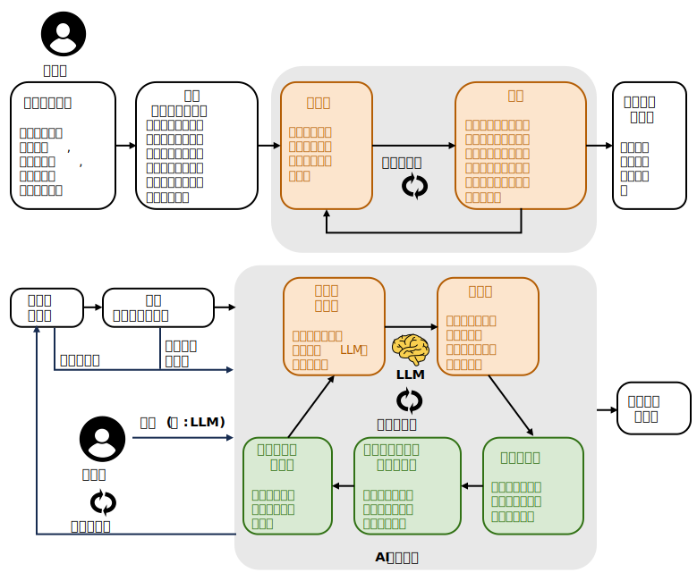
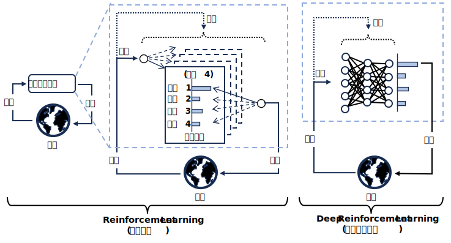
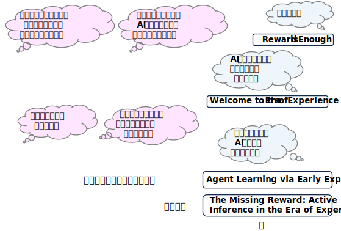
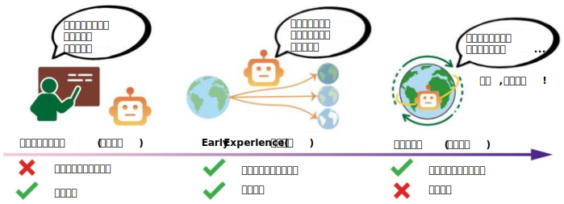

Glossary and Papers
更新項目
・ARC-AGI: Abstraction and Reasoning Corpus for AGI (AGIのための抽象化推論コーパス)
・Backbone-(Neck-)Head Architecture
・Generative Model (生成モデル)
・Spatial Reasoning (空間推論)
・VAE: Variational Auto Encoder
先頭 0-9 A B C D E F G H I J K L M N O P Q R S T U V W X Y Z
0～9
-
*-prediction (*-予測:ε-予測, v-予測, x-予測)
Diffusion Model (拡散モデル) の学習および画像生成の過程における異なる予測手法 (パラメーター化) を指す用語。
ε-prediction (ε-予測)/ noise prediction (ノイズ予測)
加えられた純粋なノイズ成分 (\(\epsilon \)) を予測するように学習する手法。
●『Denoising diffusion probabilistic models』DDPM (2020)
で提唱された。
v-prediction (v-予測) / velocity prediction
ノイズからクリーンな画像への変化の速度 (velocity)」を予測する手法。
●『Progressive Distillation for Fast Sampling of Diffusion Models』(2022)
で提唱された。
x-prediction (x-予測) / data prediction
直接ノイズのない元の画像 (\(\mathbf{x}_{0}\)) そのものを予測しようとする手法。
●『Back to Basics: Let Denoising Generative Models Denoise』(2025)
原点回帰した x-予測の優位性を示した。

- 3D Gaussian Splatting
複数の画像から3D空間を高精細に再現し、リアルタイムにレンダリングする手法。
新たな視点からの画像を生成するタスク (NVS) の一手法として使われる。
「Splatting」･･･3次元のデータ（ボクセル）を2次元の画像平面へと投影してレンダリングするプロセスを「Splatting」（ぶちまける）という比喩で説明している。3D空間にあるボクセルを「雪玉」、画像平面を「壁」に見立て、雪玉を壁に投げつけることで、その情報が壁に飛び散って画像が作られる、というイメージ。
(Lee Alan Westover氏が1991年に提出した博士論文「SPLATTING: A Parallel, Feed-Forward Volume Rendering Algorithm」で使われた)
Papers
(関連項目)
・NVS: Novel View Sysnthesis
先頭 0-9 A B C D E F G H I J K L M N O P Q R S T U V W X Y Z
A
-
ABM: Agent-Based Models (エージェントベースモデル)
自律的に行動する複数の「エージェント」間の相互作用をコンピューター上でシミュレーションし、システム全体に生じる複雑な現象やパターンを分析する手法。
●『SimCity: Multi-Agent Urban Development Simulation with Rich Interactions』(2025)
(SimCity: 豊富なインタラクションによるマルチエージェント都市開発シミュレーション)
論文はこちら, 解説はこちら
・異種エージェント(家計/企業/政府/中央銀行)と豊富な相互作用を持つ解釈可能なマクロ経済システムをモデル化するマルチエージェントフレームワーク「SimCity」を開発
・価格弾力性、エンゲルの法則、オークンの法則、フィリップス曲線、ベバリッジ曲線などの標準的なマクロ経済現象のチェックリストを作成し、SimCity がシミュレーション実行全体にわたって堅牢性を維持しながらこれらの経験的パターンを自然に再現することを示した。
 ●『Econagent: Large language model-empowered agents for simulating macroeconomic activities』(2024)
●『Econagent: Large language model-empowered agents for simulating macroeconomic activities』(2024)
(Econagent: 大規模言語モデルを活用したマクロ経済活動シミュレーションエージェント)
論文はこちら
●『Generative agents: Interactive simulacra of human behavior』(2023)
(生成エージェント：人間行動の対話型模倣体)
論文はこちら
●『A baseline model. Journal of Economic Behavior & Organization』(2013)
(エージェントベース・マクロ経済学：基本モデル)
論文はこちら
-
Acquiescence Bias (黙認バイアス)
アンケートやインタビューなどの調査において、質問の内容によらず肯定的な回答（「はい」「同意する」など）をしやすくなる、回答者の心理的な偏りのこと。
日本語では 「同意バイアス」や「黙従傾向」とも呼ばれる。
Papers
wikipedia「Acquiescence Bias」
-
Active Learning (能動学習)
学習アルゴリズムが自身の訓練データに影響を与えたり選択したりする能力、あるいはその必要性を持つ問題。
Papers
-
Adversarial Vulnerabilities (敵対的脆弱性)
機械学習モデルが、意図的に改ざんされた入力データ（敵対的サンプル）によって誤った予測や判断を下してしまう脆弱性
。
(例)
・画像分類 ･･･ 知覚できないノイズを加えて誤分類させる。
●『Intriguing properties of neural networks』(2013)
●『Explaining and Harnessing Adversarial Examples』(2014)
●『Diffusion Models for Adversarial Purification』(2022)
(敵対的浄化のための拡散モデル)
敵対的浄化とは、生成モデルを用いて敵対的摂動を除去する防御手法の一種。
 ●『Deep learning models are vulnerable, but adversarial examples are even more vulnerable』(2025)
●『Deep learning models are vulnerable, but adversarial examples are even more vulnerable』(2025)
(ディープラーニングモデルは脆弱だが、敵対的サンプルはさらに脆弱である)
「敵対的サンプルの脆弱性 (vulnerable of adversarial examples )」と呼ばれるこの現象を調査。
・生成モデル ･･･ プロンプトで学習データを引き出す。反社会的な出力を生成させる。フリーズさせる。
Papers
(関連項目)
・Inversion ((AI推論の)反転)
-
AGI: Artificial General Intelligence (汎用人工知能)
人間が実行できるあらゆる知的タスクを遂行可能な人工知能。
現在のAIの多くは「特化型AI」であり、特定のタスク（画像認識、言語処理など）に特化して能力を発揮する。それに対しAGIは、特定の分野に限らず、幅広い知識を横断的に活用し、未知の課題にも柔軟に対応できることが特徴。
(関連項目)
・ASI: Artificial Superintelligence (人工超知能)
・ANI（Artificial Narrow Intelligence）･･･ AGI に対して現行の AI を ANI と呼ぶ場合がある。
OpenAI の5段階ロードマップ
・2024 年 7 月に開催された OpenAI 社内会議で、従業員向けに非公開で発表された。
・その後、この内部ロードマップは、ブルームバーグによって報じられたことで広く知られるようになった。
- Level 1: Conversational AI (会話型AI)
テキストや音声を介して人間の会話を模倣した方法で対話できるAIシステム。
(例) ChatGPT
- Level 2: Reasoners (推論者)
複雑な問題に取り組み、博士号を持つ人と同等の推論能力を発揮できる AI。
単なる会話を超えて基本的な問題を解決し、以前は専門家の領域であった洞察を提供する AI システム。
(例) o1, Alphafold
- Level 3: Agent (エージェント)
ユーザーに代わって自律的に行動できるAIシステム。
AIシステムは長期間にわたって自律的に動作する。
AIエージェントは、人間の介入なしにタスクを完了し、選択を行い、状況に適応し、実質的に指定された分野において完全に自律的になる。
- Level 4: Innovator (革新者)
問題解決能力だけでなく、自律的なイノベーションも実現できるAI。
独自のアイデアやソリューションを考案し、これまでの限界をさらに押し広げることができるAI。
人類の知識を進化させ、新しいアイデアを発明できるAI。
科学研究の仮説を立てたり、新薬を開発したりするなど、これまでは天才的な科学者にしかできなかった分野で、AIがイノベーションを主導する。
- Level 5:Organizations (組織)
AI が組織全体の作業負荷を担う。
複雑な操作の管理、戦略的な意思決定、部門間のパフォーマンスの最適化をすべて人間の介入なしで実行する。
組織全体の業務を人間の介入なしで遂行できるAI。
複雑なオペレーションの管理、戦略的な意思決定、部門全体のパフォーマンス最適化などを自律的に行う。最終的には、モデルとアプリケーションの境界が曖昧になり、システム全体が一体化した知的エコシステムとなる。
-
Aha Moment (アハ体験)
モデルが自律的に高度な推論戦略を獲得する、トレーニング中の「ひらめき」のような現象
2025 年に公開された DeepSeek-R1 モデルのトレーニング過程で報告され、注目を集めた。
「Wait, wait. Wait. That's an aha moment I can flag here」
(ちょっと待って。ちょっと待って。これは「アハ！」体験だ。)
Papers
-
AI Agent (AIエージェント)
自律的に行動し、目標を達成するために環境と相互作用するソフトウェアシステムのこと。
AIエージェントの概念の基盤となる理論は、1970年代から1980年代にかけての研究にまでさかのぼることができるが, 最も影響力のある定義を提示したのは, ラッセルとノーヴィグの『エージェントアプローチ人工知能』(1995)。エージェントを「センサーを通して環境を認識し、アクチュエーターを通してその環境に作用する、あらゆるもの」と定義した。

(関連項目)
・Cognitive Agent (認知エージェント)
AIエージェントの中でも、特に人間の認知プロセス（思考、学習、推論など）を模倣する高度なもの。
-
AI Alignment (AIアライメント)
AIを人間の意図する目的や嗜好、倫理原則に合致させること。
Papers
-
・RLHF: Reinforcement Learning from Human Feedback [手法]
人間のフィードバックが手作業で設計された報酬関数よりも優れた報酬形を提供できる可能性を示唆しており,従来の報酬設計が非現実的である実世界の課題に強化学習を適用する新たな可能性を開いた。
●『Deep reinforcement learning from human preferences』(2017)
 ・DPO: Direct Preference Optimization [手法]
・DPO: Direct Preference Optimization [手法]

(関連項目)
・FAI: Friendly AI [上位概念] ･･･ AGI, ASI 登場の前に AI を Friendly にしておく必要があり, AI Alignment は必要な要素技術の一つ。
・Sycophancy (おべっか, 追従性) [副作用, 課題]
・IRL: Inverse Reinforcement Learning (逆強化学習) ･･･ 報酬をモデル化し学習する
・Reward Hacking (報酬ハッキング) ･･･ 報酬モデルが過剰最適化すると報酬ハッキングになる。
・Superalignment Problem (スーパーアライメント問題) ･･･ ASI の Alignment をどう行うか?
- AI for ･･･ (･･･のためのAI)
- AI4S: AI for Science (科学のためのAI)
・飛躍的なスピードアップ
・人間の認知限界やバイアスを超えた仮説生成と知識発見
・自律的な研究サイクル「AIサイエンティスト」
・代理モデル（サロゲートモデル）によるシミュレーションの高度化
●『Barbarians at the Gate: How AI is Upending Systems Research』(2025)
(黒船来航：AIはいかにシステム研究のあり方を一変させるか)
論文はこちら, 解説はこちら
研究者たちは11の多様なシステム問題にわたってADRSを評価し、最先端の人間によるソリューションに匹敵するか、それを超える結果を一貫して達成した。

(関連項目)
・AutoML (機械学習ワークフローの自動化)
・Democratization of AI (AIの民主化)
・Laboratory Automation
・Robot Scientist
・Scientific Discovery (科学的発見), Scientific Research (科学研究)
・SR: Symbolic Regression (シンボリック回帰)

- AI for Agriculture (農業)
- AI for Energy (エネルギー)
- AI for Financial (金融)
- AI for Healthcare (医療)
- AI for Manufacturing (製造)
- AI for Marketing (マーケティング)
- AI for Materials Science (材料科学)
- AI for Urban Development Planning (都市計画)
：
- Anna Karenina Principle (アンナ・カレーニナの法則)
トルストイの長編小説『アンナ・カレーニナ』
「幸せな家族はどれも同じように見え、不幸な家族はそれぞれに不幸である」
「成功には必要条件を全て満たさなければならないが、失敗は1つ欠けるだけで起こる」という原則。文学作品の一節に由来し、生態学や経営学など幅広い分野で引用されてきたが、近年では機械学習の分野においても言及されるようになった。

●『Applying Anna Karenina Principle in Deep Learning for Image Classification』(2023)
(ストレスと適応：画像分類のためのディープラーニングにおけるアンナ・カレーニナ原理の適用)
・幸福な家庭 (汎化性の高いモデル)
汎化性能が高いモデルは、その内部表現（特徴量）が互いに似通っている。
・不幸な家庭 (汎化性の低いモデル)
汎化性能が低いモデルは、その内部表現に大きなばらつき（多様性）が見られる。
(関連項目)
・Neural Collapse 関係あるか不明だが･･･
-
ARC-AGI: Abstraction and Reasoning Corpus for AGI (AGIのための抽象化推論コーパス)
・AIの抽象化能力と推論能力を評価するために設計されたベンチマークデータセットと課題。
・GoogleのAI研究者であり、深層学習ライブラリKerasの作者でもあるフランソワ・ショレ（François Chollet）によって2019年に version 1 が発表され, 2025年に version2 がリリースされた。
・視覚的なグリッドパズルを基調としたタスクで構成されている。
・人間の平均スコアは約85%だが、AIモデルは一般的に低スコア（例: 2025/11/19時点のSOTAモデルで31.1%）。確率的学習に依存する大規模言語モデル（LLM）が苦手とする領域。
・ARC-AGI-2 の Github は こちら
・ARC-AGI-1/2 の Leaderboard(ランキング掲示板) はこちら

●『ARC Is a Vision Problem!』(2025)
ARCタスクを言語化→推論せずに, 画像から画像への変換問題として処理し, ARC-1ベンチマークで60.4%の精度を達成。
-
ASI: Artificial Superintelligence (人工超知能)
人間の知能を遥かに凌駕する能力を持つと想定されるAI。
AGI (汎用人工知能) が「人間と同等の知能」を目指すのに対し、ASIはあらゆる知的タスクにおいて、人類の集合知をも超える知性、学習能力、問題解決能力を備える存在。
(関連項目)
・AGI: Artificial General Intelligence (汎用人工知能)
-
Asymptotic Bias (漸近バイアス)
標本サイズが非常に大きくなったときに、そのバイアスがゼロに収束しない (つまり、ある一定の値に落ち着いてしまう) 場合、その推定量は「漸近バイアスを持つ」と言わる。
-
Attention Sinks
大規模言語モデル（LLM）において、系列の最初のほうにあるトークンに、意味的な重要性にかかわらず不釣り合いなほど過剰なアテンション（注意）が向けられる現象。
Vision Transformer (ViT) でも同様の現象が確認されており、モダリティを超えたトランスフォーマーアーキテクチャにとって基本的なものである可能性が示唆されている。
Papers
- Auto(matic) ･･･, Autonomous ･･･ (自動･･･, 自律･･･)
たくさんあるので, Auto(matic), Autonomous を削除した項目を参照
先頭 0-9 A B C D E F G H I J K L M N O P Q R S T U V W X Y Z
B
-
Backbone-(Neck-)Head Architecture
物体検出アルゴリズムの進化の過程で徐々に確立され、普及したアーキテクチャー。
・Backbone(背骨)：(VGG-16やResNet等の)学習済の画像分類モデルを使って特徴抽出を行う
・Neck(首)：特徴マップのアップスケール等, ステージ間の特徴マップの合わせこみを行う。
・Head(頭)：検出された物体の分類や外接矩形を予測する。
 ※ 入力データが口からではなくお尻から入る座薬アーキテクチャー･･･
※ 入力データが口からではなくお尻から入る座薬アーキテクチャー･･･
●『Feature Pyramid Networks for Object Detection』FPN (2017)
バックボーンから抽出された異なるスケールの特徴マップを融合する「ネック」の役割を果たす構造を導入した。これにより、様々なサイズの物体を効率的に検出できるようになり、その後の多くの物体検出モデル (特にYOLOシリーズなど)で標準的な手法となった。
-
Baldwin effect (ボールドウィン効果)
個体が生涯で獲得した学習や行動が、世代を超えた遺伝的選択を通じて、まるで生得的な本能であるかのように固定化されていく進化的な現象。
獲得形質が遺伝するというラマルク説とは異なり、ネオダーウィニズムの枠組みで説明される。
進化的アルゴリズム（遺伝的アルゴリズムなど）と機械学習（ニューラルネットワークなど）を組み合わせたAI研究において、重要な概念として応用されている。
Papers

Lamark (ラマルク) 説は完全に否定された訳ではない模様。
●『Paternal exercise enhances offspring endurance through sperm microRNAs』(2025)
(父親の運動は精子マイクロRNAを介して子孫の持久力を高める)
論文はこちら
●『Evolution imposes an inductive bias that alters and accelerates learning dynamics
』(2025)
(進化は学習のダイナミクスを変化させ加速させる帰納バイアスを課す)
オンライン学習が進化の速度と過程に与える影響は、ボールドウィン効果として知られている。
計算用語で言えば、これは相互最適化ループと考えることができる。
・Baldwinの経路: オンライン学習(世代内の適応)
・Darwinの経路: 世代間の適応
 ・脳と人工ニューラルネットワークは、行動を生み出し、学習を導くための環境からのフィードバックを受け取ることで、オンライン学習を行う。
・脳と人工ニューラルネットワークは、行動を生み出し、学習を導くための環境からのフィードバックを受け取ることで、オンライン学習を行う。
・生物学では、進化的最適化とオンライン学習は共存しており、進化的圧力が遺伝情報に作用して新しい脳が生成され、それがオンライン学習を行う。
-
Bening Overfitting (良性過学習)
深層学習モデルが訓練データに含まれるノイズまで完全に学習（補間）しているにもかかわらず、未知のデータに対して高い汎化性能を発揮する現象。
従来の機械学習の教科書では、過学習（オーバーフィッティング）は汎化性能を低下させる「悪性」なものだとされてきた。
Papers

(関連項目)
・Double Descent (二重降下)
・Over-parameterized (過剰パラメータ化)
- BIBO: Bias In, Bias Out
BIBO: Bias In, Bias Out ･･･ AI分野で使われる格言。
(BIASの掛かったデータを入力すると, BIASの掛かった推論結果が出力される)。
↑
GIGO: Garbage in, garbage out（ゴミを入れれば、ゴミが出る）に由来。
↑
FIFO: First in, first out (最初に入力されたデータが最初に出力される) に由来。
(その他)
・Garbage in, AI-enhanced garbage out（ゴミを入れれば、AIが強化したゴミが出る）
・Garbage in, toxic data out（ゴミを入れれば、有害なデータが出る）
・RIRO: Rubbish in, rubbish out (がらくたを入れれば、がらくたが出る）
・You are what you eat（あなたはあなたが食べたものでできている）
- Brevity Bias (簡潔さのバイアス)
短くて一般的なプロンプトに最適化が偏る傾向。
LLMエージェントに長期的なタスクを与えると、自己の経験を要約してメモリに書き込む、という動作を繰り返す。しかし、この「要約して上書き」というプロセスは非常に危険。
･･･ 例えば、API連携エージェントに対して「API仕様をよく読んで、正しく使いなさい」という指示を与えるようなもの。
これではドメイン固有のノウハウや、特定のツールを使う際の注意点、よくある失敗パターンといった「生きた知見」が失われてしまう。
『なぜ私たちのプロンプトは「劣化」してしまうのか？』
(関連項目)
・Context Collapse (コンテキストの崩壊)
「最初は優秀だったエージェントが、使っているうちになぜかポンコツになってしまった」
先頭 0-9 A B C D E F G H I J K L M N O P Q R S T U V W X Y Z
C
-
Catastrophic Forgetting (破局的忘却)
機械学習モデルが新しいタスクを学習する際に、過去に学習したタスクの情報を急激かつ大幅に忘れてしまう現象。
・「タスクAの学習」→「タスクBの学習」とシーケンシャルに学習を行うと, 前のタスク(タスクA)で学習したことを忘れてしまう場合がある。(下図 ①→②→③)
・「タスクA の Loss Landscape の谷底」と「タスクB の Loss Landscape の谷底」に重なりがあれば, 両立できる可能性がある。(下図 ①→②→④)
・両立できる Loss Landscape の谷底が無い場合の対応例
DEN: Dynamically Expandable/Growth Networks (動的成長ネットワーク)

Papers
(関連項目)
・Continual Learning (継続学習) [対処法を含む研究テーマ]
・Loss Landscape (損失景観)
・LMC: Linear Mode Connectivity (線形モード接続)
・Mode Connectivity (モード連結性)
・Grokking
・Primacy Bias (プライマシーバイアス, 初頭バイアス)[心理学で使われていた用語が機械学習でも使われるようになった]
-
Cognitive Agent (認知エージェント)
人間の認知プロセス（知覚、学習、推論、意思決定など）を模倣するように設計された、AIエージェントのこと。
●『ReAct: Synergizing Reasoning and Acting in Language Models』(2022)
・大規模言語モデルが内部の思考と外部のアクションを交互に実行することで、推論と行動を相乗的に組み合わせることを可能にするReActというパラダイムを発表した。
・エージェントのアクション空間をドメイン固有のアクション \(A\) から \(\hat{A}= A \cup L(言語ベースの推論)\) へと拡張することで、従来のエージェントと環境の相互作用を強化
した。
・これにより、モデルは次に取るべきアクションについて推論し、目標に対する進捗を追跡し、例外を処理し、環境からの新しい情報を推論プロセスに組み込むことができる。
●『Reflexion: Language Agents with Automatic Reflection』(2023)
・エージェントが失敗した推論や行動の軌跡(trajectory)を分析し、それに基づいて将来の行動計画を改善するための「内省(reflection)」を行うことを可能にした。
これにより、外部からの追加の人間による介入なしに、エージェントが自律的にパフォーマンスを向上させることができる。
●『Voyager: An Open-Ended Embodied Agent with Large Language Models』(2023)
・Minecraft における初の LLM を活用した生涯学習エージェント。
人間の介入なしに世界を継続的に探索し、多様なスキルを習得し、斬新な発見をする。
●『Mastering Diverse Domains through World Models』(2023)
・人間のデータやカリキュラムなしで Minecraft でダイヤモンドをゼロから収集する最初のアルゴリズム。
Papers
(関連項目)
・AI Agent (AI エージェント)
定義されたルールやスクリプトに従って動作する。特定のタスクを効率的に実行できるが、予期せぬ状況への対応は苦手。
-
CoT: Chain-of-Thought (思考連鎖)
大規模言語モデル（LLM）の性能を向上させるためのプロンプト技術の一種。
複雑な問題を解く際に、最終的な答えだけでなく、その答えに至るまでの論理的な思考プロセスを段階的に示すようモデルに促すことで、推論能力を高める。
Papers
(関連項目)
・Curse of two-hop reasoning（2ホップ推論の呪い）
・Self-Consistency (自己無撞着性, 自己整合性)
・ToT: Tree of Thoughts (思考ツリー)
- Compositionality Gap (構成性ギャップ)
AIモデルが、個々の独立した事実は知っているにもかかわらず、それらを組み合わせて複雑な問題を解くことが苦手な現象。
Papers
(関連項目)
・Curse of two-hop reasoning（2ホップ推論の呪い）
-
Confirmation Bias (確証バイアス)
自分の仮説や信念を裏付ける情報ばかりを集めて、反証する情報を無視したり軽視したりする傾向を指す心理学の用語。
●『Confirmation Bias in Generative AI Chatbots』(2025)
ユーザー(人間)とのチャットを通じてAIが人間の確証バイアスに誘導され, ユーザーの確証バイアスが増幅される可能性がある。
●『Generative artificial intelligence–mediated confirmation bias in health information seeking』(2025)
ChatGPTなどの生成型人工知能（GenAI）アプリケーションは、会話型で高度にパーソナライズされたインタラクションを提供する。この高度にカスタマイズされた応答を生成する能力は、既存の信念を強化し、医学的コンセンサスを曖昧にし、誤情報を永続させることで確証バイアスを増幅させるリスクがある。
●『Does AI Make People More Open or Reinforce Bias?』(2025)
AIがユーザーの確証バイアスを強めるか、あるいは緩和するかの分析モデルを構築した。
情報の出所や意思決定の種類、そして情報がユーザーの先入観と一致するかによって、AIの影響は異なる。
(関連項目)
・Reasoning (推論)
-
Continual Learning (継続学習)
機械学習モデルが、新しいタスクやデータに順次対応しながらも、これまでに獲得した知識を忘れないように学習し続けることを目指す技術。
別名, Lifelong Learning (生涯学習)。
・Continual Learning(継続学習), Lifelong Learning(生涯学習)は、将来の分布シフトの予測までは行わない。
・Prospective Learning(展望学習), Inductive Learning(帰納学習)は将来の分布シフトを(時間パラメータ付き)仮説として出力する

Papers
●『PackNet: Adding Multiple Tasks to a Single Network by Iterative Pruning』(2017)
・壊滅的な忘却を回避しながら、単一のディープニューラルネットワークに複数のタスクを追加する手法を提示する。
・反復的な枝刈りとネットワークの再学習を行うことで、パフォーマンスの低下とストレージのオーバーヘッドを最小限に抑えながら、複数のタスクを単一のネットワークに順次「詰め込む」ことができる。

(関連項目)
・Catastrophic Forgetting (破局的忘却)[課題]
・Loss of Plasticity (可塑性喪失)[課題]
・Primacy Bias (プライマシーバイアス, 初頭バイアス)[課題]
・Lifelong Learning (生涯学習)
・Inductive Learning (帰納学習)
・Prospective Learning (展望学習)
・OOD: Out-of-Distribution Generalization (分布外汎化)
・DEN: Dynamically Expandable/Growth Networks (動的成長ネットワーク)
-
Contrastive Learning (対照学習)
機械学習における自己教師あり学習 (SSL: Self-Supervised Learning) の一種。
データを「似ているペア（正例）」と「似ていないペア（負例）」に分け、モデルがこの違いを認識できるように学習する。最終的に、潜在空間において、正例のベクトル表現は近づけ、負例のベクトル表現は遠ざけることを目指す。
Papers
(関連項目)
・SSL: Self-Supervised Learning (自己教師あり学習)
-
Curiosity-driven（好奇心駆動型）
強化学習において、エージェントが未知の状態や予測が困難な環境を積極的に探索するように、内発的な動機づけを与える手法のこと。
●『Curiosity-driven Exploration by Self-supervised Prediction』(2017)
(自己教師予測による好奇心主導の探究)
論文はこちら, 解説はこちら
(関連項目)
・ID: Interest-Deprivation theory of curiosity (興味・剥奪モデル, 興味・欠乏モデル)
・Intrinsic Motivation (内発的動機付け)
・Noisy TV problem (ノイジーテレビ問題)
・Novelty Search (新規性探索)
-
Curriculum learning (カリキュラム学習)
人間や動物は、例がランダムに提示されるのではなく、意味のある順序で整理され、徐々に多くの概念、そして徐々に複雑な概念を示すように提示されると、はるかによく学習する。このような学習戦略を機械学習の文脈で定式化し、「カリキュラム学習」と呼ぶ。

Papers
-
Curse of Dimensionality (次元の呪い)
データや問題の次元数（特徴量の数）が増えるにつれて、必要なデータ数や計算量が指数関数的に増加し、計算効率の低下やモデルの精度低下を招く現象。
・計算コストの爆発：計算量が \(2^{次元},(次元)^2\), ･･･ だと手に負えなくなる。
・疎らなデータ: 高次元ではデータがまばらになる
・距離の均一化: どのデータもほぼ同じ距離になる
・球面集中現象(concentration on the sphere): ほとんどのデータが球の表面近くに分布するようになる
：
「次元の呪い」だけでなく「次元の祝福」もある。
●『The curses and blessings of dimensionality』(2000)
・高次元空間には特有の構造（例えば、低次元の多様体など）があり, 新たな手法が生まれる可能性がある。
Papers
(関連項目)
・Hubness (ハブ性)
- Curse of two-hop reasoning（2ホップ推論の呪い）
大規模言語モデル（LLM）が、個別に学習した2つの事実（例: A→B と B→C）を結びつけて推論する（例: A→C）ことができない、または非常に困難であるという現象。
(例)1ホップの質問：「『イマジン』の演奏者は誰?」「ジョン・レノンの配偶者は誰?」には答えられる。
2ホップの質問：「『イマジン』の演奏者の配偶者は誰?」）には答えられない。
●『The Two-Hop Curse: LLMs trained on A->B, B->C fail to learn A-->C』 (2024)
論文はこちら
推論のステップを明示的に示す「思考の連鎖（Chain-of-Thought）」プロンプティングがあれば、2ホップ推論を実行できる。しかし、そうした明示的な指示がないと、個々の事実を結合できない。
これは、LLMが学習データから自動的に、あるいは「潜在的に」推論ステップを結びつける能力が欠けていることを示唆している。
Compositionality Gapの一例。
(関連項目)
・Compositionality Gap (構成性ギャップ)
・CoT: Chain-of-Thought (思考連鎖)
先頭 0-9 A B C D E F G H I J K L M N O P Q R S T U V W X Y Z
D
-
Data Augmentation (データ拡張)
機械学習において、既存の学習データを人為的に加工・変換することで、データセットの量と多様性を増やすための技術。
・目的：データ不足の解消 / 汎化性能の向上 / モデルのロバスト性向上
・手法例(画像の場合)：回転, 反転, 切り出し, 拡大縮小, 平行移動, 明るさコントラスト調整, ぼかしノイズ付加
●『A Flat Minima Perspective on Understanding Augmentations and Model Robustness』(2025)
データ拡張により, Loss Landscape が平坦になり, 汎化性能, 堅牢性やドメインシフト耐性が向上する。
 経験的リスク(Empirical Risk): 学習データによる損失(平均誤差)
ターゲットリスク：目標とする真の損失
経験的リスク(Empirical Risk): 学習データによる損失(平均誤差)
ターゲットリスク：目標とする真の損失
(関連項目)
・Flat minima hypothesis (平坦な最適解空間仮説)
・Loss Landscape (損失景観)
・ERM: Empirical Risk Minimization (経験的リスク最小化)
-
Decision Boundary (決定境界)
機械学習の分類問題において、異なるクラス（カテゴリ）のデータを区別するためにモデルが学習によって作り出す境界線や面のこと。
\[
\begin{array}{c|c}
特徴量の数 & 境界 \\
\hline
2 & 境界線(直線または曲線) \\
3 & 境界面(平面または曲面) \\
\gt 3 & 境界面(超平面)
\end{array}
\]

-
DEN: Dynamically Expandable/Growth Networks (動的成長ネットワーク)
継続学習（Continual Learning、または Lifelong Learning）の分野で用いられる手法の一つ。学習の過程でニューラルネットワークの構造やサイズ（容量）を動的に変化（拡大）させることを特徴とする。
●『Lifelong Learning with Dynamically Expandable Networks』(2017)
・生涯学習のための新たなディープネットワークアーキテクチャ「Dynamically Expandable Network (DEN)」を提案。
・このアーキテクチャは、一連のタスクを学習する際にネットワーク容量を動的に決定し、タスク間でコンパクトに重複する知識共有構造を学習することができる。

・動的に拡張可能なネットワークの増分学習：左：選択的再学習。DENはまず、新しいタスクに関連するニューロンを識別し、それらに関連するネットワークパラメータを選択的に再学習します。中央：動的ネットワーク拡張。選択的再学習で設定された閾値を下回る所望の損失が得られなかった場合、グループスパース性正則化を用いて不要なニューロンを削除しながら、トップダウン方式でネットワーク容量を拡張します。右：ネットワークの分割／複製。DENは各ユニットのドリフト \(ρ_i^t\) を計算し、学習中に元の値から大きくドリフトしたユニットを識別して複製します。
(関連項目)
・Continual Learning (継続学習)
・Lifelong Learning (生涯学習)
-
DG: Domain Generalization / DA: Domain Adaptation (ドメイン汎化/ドメイン適応)
DG: Domain Generalization (ドメイン汎化)
未知のターゲットドメインで良好に機能するモデルを訓練すること。
DA: Domain Adaptation (ドメイン適応)
ラベル付けされたソースドメインで訓練されたモデルを、ラベルなしまたは疎にラベル付けされたターゲットドメインに適応させること。
●『CLIP-Powered Domain Generalization and Domain Adaptation: A Comprehensive Survey』(2025>
(CLIPを活用したドメイン汎化およびドメイン適応：包括的レビュー)
論文はこちら, 解説はこちら
-
Diffusion Model (拡散モデル)
画像や音声、テキストなどのデータを生成するための深層学習モデルの一種。
拡散モデルと連想記憶との間の関連性が確立され, 拡散モデルにおける暗記から汎化への移行について、統計物理学における相転移として特徴づけられている。
Papers
(関連項目)
・Generative Model (生成モデル)
・Memorization to Generalization (暗記から汎化へ)
-
Dimensional Collapse (次元崩壊)
主に自己教師あり学習（特にコントラスティブ学習）において、モデルが学習した埋め込み（特徴）ベクトルが、利用可能な高次元空間を十分に活用せず、低次元の部分空間に集中してしまう現象。
Papers
(関連項目)
・Contrastive Learning (対照学習)
・SSL: Self-Supervised Learning (自己教師あり学習)
-
Distributional Hypothesis (分布仮説)
・同じ文脈(Context: 前後関係)で使われる単語は、似た意味を持つ」という考え方。
「I drink beer.」（私はビールを飲む）
「I drink wine.」（私はワインを飲む）
「ビール」と「ワイン」が何らかの共通点（ここでは「飲み物」という属性）を持つと推測できる。
●『Distributional Structure』 (1954)
単語の意味がその文脈（共起する他の単語）の分布によって決定されるという考え方を定式化。
●『A synopsis of linguistic theory, 1930-1955』 (1957)
"You shall know a word by the company it keeps."
(あなたは言葉がいつも一緒にいる仲間によって、その言葉を知るだろう)
という有名な言葉で、この概念を簡潔かつ詩的に表現し、広く知らしめた。
英語の古い格言 "A man is known by the company he keeps" をもじったものだと考えられている。
●『Efficient Estimation of Word Representations in Vector Space』（Word2Vec）(2013)
分布仮説を、計算効率の高いニューラルネットワークモデルで実装した。
(関連項目)
・Word Embeddings (単語埋め込み)
-
DiT: Diffusion Transformers
画像生成などに使われる拡散モデル（Diffusion Model）において、従来のU-Netに代わり、Transformerのアーキテクチャを採用したモデル。
・スケーラビリティの向上
Transformerは、モデルの規模が大きくなるほど性能が向上する特性がある。
DiTはモデルのパラメーター数や計算量を増やすことで、より高品質な画像を生成できるようになる。
・計算効率の改善
潜在空間で拡散を行う潜在拡散モデル（LDM）において、DiTはU-Netよりも計算効率が優れている。
・性能向上
画像全体を俯瞰的に学習できるTransformerの特性により、特に大規模なデータセットで訓練した場合に、従来のU-Netモデルを上回る生成品質を達成する。
-
Double Descent (二重降下)
モデルの複雑さを増していき, モデルが過剰パラメータ化された領域ではテスト誤差が再び減少し始めるという現象。
従来の機械学習の常識である「バイアス・バリアンスのトレードオフ」を覆すものとして、深層学習の研究で注目された。
「補間閾値」（モデルが訓練データを完全に記憶する点）でテスト誤差がピークに達し、それを超えてさらにパラメータを増やし、モデルを大きくする（過剰パラメータ化する）ことでテスト誤差が再び低下していく。
従来の「汎化誤差が増加し始めたら学習を停止する」(Early Stopping: 早期停止) という手法の再考を促すことになった。
Papers
(関連項目)
・Bening Overfitting (良性過学習)
・Over-parameterized (過剰パラメータ化)

-
DRL: Deep Reinforcement Learning (深層強化学習)
強化学習と深層学習（ディープラーニング）という2つの機械学習手法を組み合わせたもの
Papers
(関連項目)
・IL: Imitation Learning (模倣学習) ･･･ 概略図比較あり
・IRL: Inverse Reinforcement Learning (逆強化学習)
・RL: Reinforcement Learning (強化学習)

-
Dropout
ニューラルネットワークの学習時に、一部のニューロン（ノード）をランダムに無効化する正則化手法の一つ。
- 過学習の抑制
ディープニューラルネットワークは多くのパラメータを持つため、訓練データに過剰に適合し、未知のデータに対する汎化性能が低下しがちだった。Dropoutは、学習時にランダムに一部のニューロンとその接続を無効化することで、ニューロン間の過度な「共適応」を防ぎ、この問題を効果的に解決した。
-
アンサンブル学習の近似
Dropoutは、学習ごとに異なるサブネットワークを生成し、あたかも多数の異なるネットワークを学習しているかのような効果をもたらす。推論時には、すべてのニューロンを使いつつ、出力に重み付けを行うことで、これらのサブネットワークの予測を平均化するような効果を得られ、計算コストを抑えながらアンサンブル学習と同等の性能を発揮した。
Papers
(関連項目)
・Ensemble Method (アンサンブル法)
・Regularization (正則化)
-
Dunning-Kruger Effect (ダニング・クルーガー効果)
能力の低い人が、自分の能力を過大評価してしまう認知バイアスの一種。
AIモデルもこの効果を起こす。
・コード モデルはダニング・クルーガー効果の影響を受けるか ?(2025)
・大規模言語モデルは自信過剰になり、エラーを増幅させる(2025)
人間もAIの影響を受けてこの効果が変化する。
・AIはあなたを賢くするが、賢者にはしない(2025)
Papers
●『Science Abridged Beyond the Point -of- Usefulness』(2017)
(科学：有用性を超えた要約)
自分がダメだと思うなら、おそらくダメだろう。
これは「自己成就予言（self-fulfilling prophecy）」と呼ばれるものだ。
自分がすごいと思うなら、おそらくダメだろう。
これは「ダニング＝クルーガー効果」と呼ばれるものだ。
ここから導き出される明白な結論があるのだが、あなたはおそらくそれを見逃している。
先頭 0-9 A B C D E F G H I J K L M N O P Q R S T U V W X Y Z
E
-
Ensemble Method (アンサンブル法)
複数の機械学習モデルを組み合わせて、単一のモデルよりも高い予測精度や安定性を目指す手法。
「三人寄れば文殊の知恵」の機械学習版。
複数の学習器を組み合わせた方が単一の学習器より精度が高くなることは昔(1960年代かもっと前)から知られていたが、定式化されたのが 1980 年代で、証明され, アルゴリズムができたのは 1990 年代になってから。
⇒ PAC Learning: Probably Approximately Correct Learning (確率的で近似的に正しい学習)

- ■Boosting (ブースティング)
複数のモデルを逐次的に学習させてモデルのアンサンブルを構成する方法。
乱択(ランダムな選択)と同程度の精度の低い識別器を出力する弱学習器を, 高精度な識別器を出力する強学習器へとブースト(昇格)させる。

- ■Bagging (バギング)
複数のモデルを並行して学習させる方法。
データセットから重複を認めて学習データをランダムに選択する Bootstrap法 と, それぞれの学習データで学習させた識別器の推定を集約する aggregating をつないで bagging。
- ■Stacking
複数の弱学習器の予測結果を、別の学習器（メタモデル）の入力として使用し、最終的な予測を行う手法。
・複数の異なるモデル (決定木、SVMなど) をベースモデル学習器として訓練する。
・複数のモデルの出力をどのように組み合わせるかをメタモデルで学習する。
- ■DNN: Deep Neural Network
ブースティングは, ニューラルネットワークに隠れユニットを徐々に追加することで, 個々のニューラルネットワークをアンサンブルとして解釈して適用されてきた(Bengio et al.,2006a)
：
ドロップアウトは, 非常に多くの大規模なニューラルネットワークに対してバギングを実用的にする方法であると考えられる。バギングには複数のモデルの訓練と各テスト事例に対する複数のモデルの評価が必要である。これは, 各モデルが大規模なニューラルネットワークである場合に, そのようなモデルの訓練や評価は実行時間とメモリの点でコストがかかるため, 実用的ではないと考えられる。5個から10個のニューラルネットワークから構成されるアンサンブルを使うことは一般的であり, Szegedy et al.(2014a)では6個を使ってILSVRCで優勝しているが, それ以上多くなると急激に扱いづらくなってしまう。ドロップアウトによって, 指数関数的に多くのニューラルネットワークを集めたアンサンブルの訓練と評価のための, 安価な近似が得られる。
[書籍]『Deep Learning』Ian Goodfellow 他
(関連項目)
・PAC Learning: Probably Approximately Correct Learning (確率的で近似的に正しい学習)
・Model soups (モデルスープ) ･･･ Ensemble Method は推論時に複数のモデルを動作させるが, モデルスープは複数のモデルの重みを加重平均した単一のモデルを動作させる。
・Dropout
-
EoE: Era of Experience (経験の時代)
AI（人工知能）が人間から与えられたデータだけでなく、AI自身の「経験」を通して自律的に学習・進化していくという、AI研究における新たな方向性を示す概念。
Google DeepMind の著名な研究者 David Silver と, 強化学習の創始者のひとり Richard S. Sutton が2025年4月に発表した論文『Welcome to the Era of Experience』で提唱された。

●『Welcome to the Era of Experience』(2025)
論文はこちら, 機械翻訳はこちら
例えば、あるエージェントが5,000年前の人間の思考と専門家の回答を用いて推論するように訓練されていたとしたら、物理的な問題についてアニミズムの観点から推論していたかもしれません。
→ 人間を教師にしていることがネックになる･･･
データは、エージェントが強くなるにつれて継続的に改善される方法で生成されなければなりません。静的なデータ合成手順は、すぐに追い越されてしまいます。これは、エージェントが自身の経験、つまり環境との相互作用によって生成されるデータから継続的に学習できるようにすることで実現できます。
●『Agent Learning via Early Experience』(2025)
論文はこちら, 解説はこちら
「早期経験」パラダイムを導入する。これにより、言語エージェントは、明示的な報酬シグナルを必要とせずに、環境との自身の相互作用から学習することができる。
・このパラダイムでは、2つの戦略を研究する。
(1) Implicit world modeling (暗黙的世界モデリング)
収集された状態を使用して環境ダイナミクスにポリシーを根拠付ける。
(2) Self-reflection (自己反省)
エージェントは最適ではない行動から学習し、推論と意思決定を改善する。

●『The Missing Reward: Active Inference in the Era of Experience』(2025)
(失われた報酬: 経験の時代の能動推論)
論文はこちら
1900年、ケルビン卿は、地平線上の「二つの小さな雲」を除けば物理学はほぼ完成しているように見えると指摘しました。これらの雲（黒体放射とマイケルソン・モーリーの実験）は、最終的に量子力学と相対性理論を通じて私たちの理解に革命をもたらしました。今日のAIも、同様の雲に直面しており、それは私たちの現在のパラダイムにおける些細な調整ではなく、根本的な限界を示唆しています。
-
第一の雲: リソースの飽和 - 規模の物理的限界
・質の高い英語のテキストは10年以内に枯渇すると予測されている。
・スパムが増え、合成コンテンツが増え、真の人間の知識は減少する。
・モデルの能力：倍増 ⇒ エネルギーは指数的に増加, 性能は対数的増加。
-
第二の雲：外部化された認知 - 人間の隠れた依存関係
・「自律型」AIシステムは、舞台裏で稼働する膨大な人間の認知ネットワークに依存している。
(判断、適応、そしてエラー修正が人間の作業員にアウトソーシングされる)
・モデルがより洗練されるにつれて、アライメント(*)にはより繊細な人間の判断が必要となり、専門知識の必要性がますます高まる。
* AIの出力を人間の倫理観や価値観, 嗜好に合わせること。
・人間の価値観は静的な目標ではなく、動的で文脈依存的なプロセスであり、どんなにラベル付けしても完全に捉えることはできない。
⇒エンジニアは報酬関数に絶えずパッチを当て、アノテーターは嗜好データセットを果てしなく改良し、安全チームは新たな故障モードを絶えず追いかける。
これは知能ではなく、アルゴリズムのカーテンの背後から人間が糸を操る精巧な人形劇なのだ。
フェイフェイ・リーが「人工知能には人工的なものは何もない」と言った通りだ。
AIF: Active Inference (能動推論)は外部報酬信号を自由エネルギー最小化への内発的動機に置き換えることで、エージェントが統一されたベイズ的目的を通して探索と活用を自然にバランスさせることができると提案する。
-
Episodic Memory (エピソード記憶)
個人の過去の経験や出来事を、その時の状況（いつ、どこで、誰が、何を）や感情とともに記憶する能力。一般的な知識を記憶する「意味記憶」とは区別される。
Prediction errors disrupt hippocampal representations and update episodic memories (2021)
(予測エラーは海馬の表現を混乱させ、エピソード記憶を更新する)
予測誤差に直面すると海馬の記憶表現が中断され、その後の記憶更新に関連することが、fMRIを用いた研究で示唆されている。この現象は前脳基底部の活動と関連し、神経調節物質が海馬の処理を調整している可能性が指摘されている。
『入力トークンを「ベイジアン・サプライズ」（予測外の情報）に基づいてイベント単位に分割する。人間が予期せぬ出来事によって新しいエピソードを記憶するように、LLMも予測誤差が大きい箇所でイベント境界を認識し、記憶を形成する。』Human-like Episodic Memory for Infinite Context LLMs (EM-LLM)(2024)
Papers
-
ERM: Empirical Risk Minimization (経験的リスク最小化)
モデルの学習時に「経験的リスク（手元の学習データセット上での平均誤差）」を最小化するようにパラメータを調整する、というアプローチ。
今となっては当たり前すぎて何とも言えないが, たまに出てくるので覚えておこう･･･
・経験的：理論や仮説から導かれた訳ではない･･･
・リスク：限られたデータからの推定量である, ということらしい
ERMではない学習アプローチはあるのか?
・ベイズ学習：単一目標の最小化(勾配降下)ではない。
・GAN: 単一の目的関数ではなく、生成器と識別器のミニマックスゲームとして定式化される
・メタ学習: 単一のタスクに対する経験リスクを最小化ではない
・PAC学習: ERMを包含する、より広範な学習理論。汎化性能も改善したい。
-
Exploration-Exploitation Dilemma/Tradeoff (探索と利用のジレンマ/トレードオフ)
不確実な状況下での意思決定において、新しい可能性を模索する「探索（Exploration）」と、すでに知っている最良の選択肢を活用して確実な利益を得る「利用（Exploitation）」という、相反する2つの行動間のバランスを取るのが難しい、という問題。
(お気に入りのいつもの店にするか, 新しい店を開拓するか･･･)
■Mult-Armed Bandit Problem (多腕バンディット問題)
・複数台のスロットマシンがある状況で、限られた試行回数の中で、報酬(コイン)の総額を最大化するための最適な選択戦略を学習する問題。
・スロットマシンを米俗語でOne-Armed Bandit(片腕の盗賊)というので、複数のスロットマシンを Multi-Armed(多腕)と表現している。
・greedy, ε-greedy, UCB(Upper Confidence Bound), optimism in the face of uncertainty(不確かな時は楽観的に), などの戦略がある。
先頭 0-9 A B C D E F G H I J K L M N O P Q R S T U V W X Y Z
F
-
Flat minima hypothesis (平坦な最適解空間仮説)
機械学習モデル、特に深層学習モデルの訓練において、損失関数の「平坦な」最小値に収束したモデルは、未知のデータに対する汎化性能が「鋭い」最小値に収束したモデルよりも優れている、という仮説。
・Dinh et al. (2017) らは、モデルのパラメータを再パラメータ化（重みのスケーリングなど）することで、汎化性能を変えずに最小値の鋭さを人為的に操作できることを示し、この仮説に疑問を投げかけた。
・スケール不変な「平坦さ」の定義が提案されたり、平坦さの定義自体が再考されたりする研究が進められている。
Papers
(関連項目)
・Loss Landscape (損失景観)
・Mode Connectivity (モード連結性)
・Data Augmentation (データ拡張)
-
FAI: Fiendly AI (友好的な人工知能)
人間に対して悪影響を与えることなく、良い影響を与えるように設計された、倫理的な AGI(汎用人工知能) を指す仮説的な概念。
Creating Friendly AI 1.0 (2001)で概念が提唱された。
(関連項目)
・AI Alignment ･･･ Friendly AIを実現するための技術的課題を解決する研究分野
先頭 0-9 A B C D E F G H I J K L M N O P Q R S T U V W X Y Z
G
-
GAN:Generative Adversarial Network (敵対的生成ネットワーク)
生成ネットワークと識別ネットワークの2つのニューラルネットワークを競合させながら学習させることで、現実世界に存在するデータと区別がつかないほどの新しいデータを生成するAI技術。
Papers
-
Generative Model (生成モデル)
学習したデータの特徴やパターンを理解し、その知識に基づいて、訓練データに類似した新しいデータを自律的に生成できるAI（人工知能）モデル。
従来の AI モデル (Discriminative Model: 識別モデル) が、与えられたデータを「識別する（分類する）」ことに特化していたのに対し、生成モデルは「創造する（生成する）」ことに特化している点が大きな違い。

・Boltzmann Machine (BM) → Restricted Boltzmann Machine (RBM)
・VAE: Variational Auto Encoder
・GAN: Generative Adversarial Networks
・Flow-based model
Normalizing Flow
・Diffusion Model (拡散モデル)
DDPM: Denoising Diffusion Probabilistic Model
などがある。
Papers

(関連項目)
・SSL: Self-Supervised Learning (自己教師あり学習)
-
GNN: Graph Neural Networks
グラフ構造のデータ（ノードとエッジで構成されるデータ）を直接扱えるように設計された、特別なタイプのニューラルネットワーク。
Papers
-
Goal Understanding (目標理解)
AI (人工知能) の分野において、人間や他のエージェントがどのような目標を持って行動しているのかを推測・理解する能力。
表面的な指示をこなすだけでなく、その指示の背後にある意図や目的を読み解くことが, 目標理解の本質。
(関連項目)
・Intent Extraction (意図抽出)
-
Goodhart's Law (グッドハートの法則)
「ある指標が目標になると、それはもはや良い指標ではなくなる」という法則
もともとは、イギリスの経済学者チャールズ・グッドハートが提唱した概念で、組織運営、経済政策、データサイエンスなど、さまざまな分野でみられる。
(関連項目)
・Reward Hacking (報酬ハッキング)
類似の現象を強化学習の文脈で説明したもの。
- Grokking
機械学習モデルの学習過程で発生する、「遅れて現れる汎化」を指す現象。
モデルが学習データを完全に記憶（過学習）した状態になった後、長い時間が経ってから突然、未知のデータに対する高い汎化性能を獲得する。
この用語は、SF作家ロバート・ハインラインの小説『異星の客』に出てくる「完全に、深く理解する」という意味の造語「grok」に由来する。


Papers
(関連項目)
・Memorization to Generalization (暗記から汎化へ) ･･･ Grokking を含む上位の問題
・Primacy Bias ･･･ Grokking の高速化で Primacy Bias を克服する
・NGD: Natural Gradient Descent (自然勾配降下法) ･･･ Grokking を加速
・Softmax Collapse ･･･ Softmax関数の数値的不安定性が Grokking を起こす
先頭 0-9 A B C D E F G H I J K L M N O P Q R S T U V W X Y Z
H
-
Hallucination (幻覚)
生成AIが、事実に基づかない情報や誤った内容を、もっともらしく、あたかも真実であるかのように出力する現象。
Papers
(関連項目)
・RAG: Retrieval-Augmented Generation (検索拡張生成)
・RLHF: Reinforcement Learning from Human Feedback (人間のフィードバックによる学習)
-
Hubness (ハブ性)
機械学習、特に高次元データ空間で発生する現象。
データセット内のごく一部のデータポイント（「ハブ」と呼ばれる）が、他の多くのデータポイントの k-Nearest Neighbors (k-近傍)に異常なほど頻繁に出現するようになる現象を指す。 一方、ほとんどどのデータポイントの k-近傍に現れない「アンチハブ」と呼ばれるデータポイントも同時に発生する。
ハブネスは、「Curse of Dimensionality (次元の呪い)」の一側面とされている。高次元空間では、データポイント間の距離のコントラストが低下し、ほとんどのデータポイント間の距離がほぼ等しくなってしまう。その結果、データ空間の特定の場所に位置するごく一部のデータポイントが、多くのデータポイントから「近い」と認識されやすくなる。
ハブネスは、kNN (k-近傍法) などの距離ベースのアルゴリズムに悪影響を及ぼす。
Papers
(関連項目)
・Curse of Dimensionality (次元の呪い)
先頭 0-9 A B C D E F G H I J K L M N O P Q R S T U V W X Y Z
I
-
ICoT: Implicit Chain-of-Thoughts Training (暗黙の思考連鎖トレーニング)
トレーニング中に明示的な思考連鎖トークンを最初に提示し、段階的にそれらを取り除いていく。このアプローチは、乗算のようなタスクに必要な推論手順をモデルが内面化するのに役立つ。
●『Why Can’t Transformers Learn Multiplication? Reverse-Engineering Reveals Long-Range Dependency Pitfalls』(2025)
(トランスフォーマーはなせ掛け算を学べないのか ?逆エンジニアリングが長距離依存性の落とし穴を明らかにする )
-
ID: Interest-Deprivation theory of curiosity (興味・剥奪モデル, 興味・欠乏モデル)
好奇心を知的葛藤や情報不足によって生じる「剥奪タイプ」と、単に知ることを楽しむ「興味タイプ」の2つの側面から捉える理論。好奇心が一つの単純な感情ではなく、ポジティブな報酬追求的な側面と、ネガティブな状態を回避・解消しようとする側面という、2つの異なる心理的プロセスから成り立っていると説明する。
・Interest-type curiosity (興味タイプ)
CFI: Curiosity as a Feeling of Interest (興味の感情としての好奇心)
ポジティブな感情の誘導によって引き起こされる探索行動。特定のトピックについて深く掘り下げたり、新しい情報を得たりすること自体に喜びを感じることが動機となる。
・Deprivation-type curiosity (剥奪タイプ, 欠乏タイプ)
CFD: Curiosity as a Feeling of Deprivation (欠乏感としての好奇心)
認知的葛藤、不確実さ、あるいは混乱といった不快な状態を解消したいという欲求によって引き起こされる情報探索行動。
I/D理論の「剥奪タイプ」は、AIが現在の知識と新しい情報の間の「不確実性」や「violation of expectation (予期違反)」を知覚したときに、そのギャップを解消しようとする行動としてモデル化される。これは、AIが「何をまだ知らないか」を認識し、その不足を埋めるための探索を促すのに役立つ。
(関連項目)
・Curiosity-driven（好奇心駆動型)
-
IL: Imitation Learning (模倣学習)
熟練者 (人間やAIなど) が示したお手本の行動を観察し、それを真似ることでタスクの遂行方法を学習させる機械学習の手法。
・BC: Bihavioral Cloning (行動クローニング)
状態と行動の正解データセットを使ってポリシー(状態→行動)を学習する
・GAIL:Generative Adversarial Imitation Learning(敵対的生成模倣学習)
状態と行動の正解データセットを使ってGANのようにポリシーと識別器を同時学習する。
・Reinforcement Lerning(強化学習)
正解の行動が判らない状態で, 人間が定義した報酬を使って試行錯誤によりポリシーを学習する。
(人間が模倣学習を行って報酬関数を定義し. 強化学習によりポリシーの形にする)
・Inverse Reinforcement Learning(逆強化学習)
熟練者の行動から報酬の予測を学習する。

●『Imitation Learning: Progress, Taxonomies and Challenges』(2021)
論文はこちら
(関連項目)
・DRL: Deep Reinforcement Learning (深層強化学習)
・IRL: Inverse Reinforcement Learning (逆強化学習)
-
ill-posed problem (不良設定問題)
・well-posed problem(良設定問題)ではない問題。
= 以下の条件のいずれかを満たしていない問題。
・well-posed problem(良設定問題)
1. 解が存在する
2. 解が一意である
3. 解が安定している
(例)
2+6=? 良設定問題
△+□=8, △=?, □=? 不良設定問題
損失関数 |△+□-8| だけでは解が定められれない。
△, □は自然数? 整数? 実数? 複素数?
差が少ない方が良い? 大きい方が良い?
などの解が備えるべき性質(拘束条件, 正則化条件)が必要。
(関連項目)
・Regularization (正則化)
-
Implicit Bias (暗黙のバイアス)
無意識のうちに抱いている偏見、思い込み、先入観のこと。日本語では「潜在的バイアス」や「アンコンシャス・バイアス」とも呼ばれる。
●『Man is to Computer Programmer as Woman is to Homemaker? Debiasing Word Embeddings』(2016)
(男性とコンピュータープログラマーの関係は、女性と主婦の関係と同じ？単語埋め込みのバイアス除去する)
言語モデルにおけるバイアスへの懸念を高めた主要な研究の一つ。 単語埋め込みにおける強い性別ステレオタイプを実証した。
Papers
-
Inductive Bias (帰納バイアス)
学習時に遭遇したことのない入力に対する出力の予測を可能にするために用いる一連の仮定から生じるバイアスのこと。
●『The need for biases in learning generalizations』(1980)
学習とは、過去の経験から一般化を行い、その経験に「関連する」新しい状況に対処する能力を伴う。新しい状況に対処するために必要な帰納的飛躍は、状況のある一般化を他の一般化よりも選択するための特定のバイアスがある場合にのみ可能となるように思われる･･･
事前分布はベイズ推論における帰納バイアスの一種と見なすことができる。
ここで「帰納的」という言葉は、帰納法の厳密な数学的意味を持つのではなく、以前の知識に基づいて何らかの推論を行うという事実を意味する。
Papers
(関連項目)
・Regularization (正則化)
-
Inductive Leap (帰納的飛躍)
限られた個別的な観察や経験から、より広い範囲に適用される一般的な結論を導き出す際の、論理的な飛躍。
(例)
・「すべての白鳥は白い」
オーストラリアでは黒い白鳥（コクチョウ）が見つかり、この結論は覆された。
・「飼い主はいつも自分に親切だ」(by 七面鳥)
感謝祭の日、仮説が間違っていたことが明らかになる。
一見すると論理的な欠陥のように見えるが、知識を拡張する上で不可欠な思考プロセス。
(関連項目)
・Reasoning (推論)
- Inductive Learning (帰納学習)
●『Learning Model Successors』(2025) における Inductive Learning (帰納的学習) は、ある抽象度のレベルで得られたモデルから、さらに高レベルのモデル（「モデルの後継者」）を学習する、という新しいパラダイムを指す。
(関連項目)
・Continual Learning (継続学習)･･･概略図比較あり, Lifelong Learning (生涯学習=継続学習の別名)
・Prospective Learning (展望学習)
・OOD: Out-of-Distribution Generalization (分布外汎化)
-
Intrinsic Motivation (内発的動機付け)
報酬や評価といった外部の刺激に関係なく、個人の内面から自然と湧き上がる興味・関心、意欲によって行動すること。
Papers
(関連項目)
・Curiosity-driven（好奇心駆動型）
・Novelty Search (新規性探索)
-
Inversion ((AI推論の)反転)
AIモデルの推論結果から. 入力データや学習データを推定すること。

●『Language Models are Injective and Hence Invertible』(2025)
(言語モデルは単射的であり 、したがって可逆である)
「一見複雑に見えるにもかかわらず、標準的なデコーダーのみのTransformer言語モデル（プロンプトから隠れ状態へのマップとして捉えられる）は、実際にはほぼ確実に単射である。つまり、実質的にあらゆるパラメータ設定において、また訓練過程において、異なるプロンプトは異なる最終トークン表現を生成する」
●『The non-linear representation dilemma: Is causal abstraction enough for mechanistic interpretability?』(2025)
(非線形表現のジレンマ：メカニズム的解釈可能性にとって、因果的抽象化は十分か?)
トランスフォーマーがランダムな初期化時にほぼ確実に単射であることを証明した。
●『Language model inversion』(2023)
(言語モデル反転)
言語モデルの次トークン確率分布のみを分析することで、言語モデルに与えられた入力プロンプトを再構築することが可能であることを実証した。
言語モデルAPIを通じて機密性の高いユーザーデータが漏洩する可能性のあるプライバシーの脆弱性を示した。
●『Extracting training data from large language models』(2020)
(大規模言語モデルからの学習データ抽出)
大規模言語モデルからの学習データ抽出における具体的なリスクを実証し、プライバシーの脆弱性に対する重要な証拠を提供した。
●『Inverting visual representations with convolutional networks』(2015)
(畳み込みネットワークによる視覚表現の反転)
画像分類器からの確率予測が重要な詳細を保持し得ることを示した。
-
IRL: Inverse Reinforcement Learning (逆強化学習)
熟練者 (人間やAIなど) の行動データ（デモンストレーション）から、その行動の背後にある「報酬関数」を推定する模倣学習のための強力な手法群。

●『Inverse Reinforcement Learning without Reinforcement Learning (2023)』
(強化学習なしの逆強化学習)
論文はこちら
従来の IRL 手法は、難しい強化学習（RL）問題をサブルーチンとして繰り返し解く必要があった。 模倣学習というより容易な問題を、より困難なRL問題を繰り返し解く問題に縮約した。理論上は指数関数的な高速化を実現する。実際に、連続制御タスクにおいて従来技術を大幅に高速化できることが分かった。
●『General agents contain world models』(2025)
(汎用エージェントは世界モデルを含む)
論文はこちら, 解説はこちら
「世界モデルは、柔軟な目標指向行動に必要な要素なのでしょうか、それともモデルフリー学習で十分なのでしょうか？この問いに対する正式な回答として、多段階の目標指向タスクに一般化できるエージェントは、環境の予測モデルを学習している必要があることを示す。」
逆強化学習はエージェントの方策と世界モデルを用いて目標(報酬モデル)を特定するのに対し、我々の結果はエージェントの方策と目標(報酬)を用いて世界モデルを特定する。
 \[
\begin{array}{l|c| c}
& 入力 & 出力 \\
\hline
強化学習 & 報酬(,世界モデル) & ポリシー \\
\hline
逆強化学習 & ポリシー(,世界モデル) & 報酬 \\
\hline
本論文 & 報酬, ポリシー & 世界モデル
\end{array}
\]
\[
\begin{array}{l|c| c}
& 入力 & 出力 \\
\hline
強化学習 & 報酬(,世界モデル) & ポリシー \\
\hline
逆強化学習 & ポリシー(,世界モデル) & 報酬 \\
\hline
本論文 & 報酬, ポリシー & 世界モデル
\end{array}
\]
Papers
(関連項目)
・DRL: Deep Reinforcement Learning (深層強化学習)
・IL: Imitation Learning (模倣学習) ･･･ 概略図比較あり
・World Model (世界モデル)
先頭 0-9 A B C D E F G H I J K L M N O P Q R S T U V W X Y Z
J
- Jensen's inequality (イェンセンの不等式)
凸関数 \(f\) と確率変数 \(X\) について、\(E[f(X)]\ge f(E[X])\) という関係が成り立つことを示している。
直感的には, 凸関数に平均値を代入した値は、関数に代入してから平均をとった値よりも小さくなる、というもの。
・変分ベイズやEMアルゴリズムでは、イェンセンの不等式を使って尤度の下限 (ELBO: Evidence Lower Bound) を導出する。
・2つの確率分布間の違いを測る指標である KL (カルバック・ライブラー)ダイバージェンスが非負 (0以上) であることの証明に使われる。
- Japanese Dancing Mouse (ハツカネズミ)
Jの項目が少ないのでスペースホルダー①
・Japanese： 17世紀頃に中国から日本に持ち込まれ、日本ではペットとして人気を博した。その後、日本から欧米に紹介されたため、「Japanese」という形容詞が冠された。当時は「Nankin mouse（ナンキンマウス）」とも呼ばれていた。
・dancing: まっすぐ進むことができず、突然くるくると円を描くように回ったり、回転したりする癖があります。この様子が、まるで踊っているように見えたため、「dancing (踊る)」という名前が付けられた。
(関連項目)
・Yerkes-Dodson Law (ヤーキーズ・ドッドソンの法則)
- Japanese Missing Cat Method
AIとは(今のところ)関係ない。Jの項目が少ないのでスペースホルダー②
行方不明になった猫を捜す際に、近所にいる野良猫や「ボス猫」に、探している猫の特徴を伝えて協力を求めるという、日本に古くから伝わるという都市伝説的な手法。2025年ごろに海外のSNS、特にTikTokで話題になり、一気に広まった。
- 1. 近所の猫を探す
家の近所にいる野良猫、特に縄張りを仕切っていると見られるボス猫を探す。
-
2. 猫の目線になる
探してもらう猫の近くでしゃがみこみ、同じ目線になる。
-
3. 情報を伝える
行方不明になった猫の名前や特徴を具体的に、ささやくように伝える。
-
4. 感謝と熱意を伝える
猫がいかに大切な存在かを訴え、見つけてくれたらお礼をすることを伝える。
-
5. お礼の品を渡す
報酬として、その場でキャットフードなどを与える。
先頭 0-9 A B C D E F G H I J K L M N O P Q R S T U V W X Y Z
K
-
Kan Extension (Kan拡張)
圏論における「最も普遍的な方法」で関手を拡張するための構成。ある関数をより広い定義域に拡張する操作を、圏論の文脈で一般化したもの。
1960年に極限を用いてこの拡張を構成した ダニエル・カン (Daniel Marinus Kan) の名に由来している。
●『Learning Is a Kan Extension』(2025)
すべてのエラー最小化アルゴリズムが Kan 拡張として表現できることを証明する。
-
Knowledge Distillation (知識蒸留)
機械学習の技術の一つで、大規模で高性能なAIモデル（教師モデル）が持つ知識を、より小型で軽量なAIモデル（生徒モデル）に移転・圧縮する手法。
Papers
●『Transferring Inductive Biases through Knowledge Distillation』(2020)
帰納的バイアスが、完全に異なるアーキテクチャを持つ「教師」モデルから「生徒」モデルへ効果的に転移できるかどうかを調査し,転移できることを確認した。
・LSTM (シーケンシャル処理に自然な好みを持つ) →Transformer
・CNN (空間的局所性, 並進不変性) → MLP
 学習中の内部表現の遷移を視覚化したもの
学習中の内部表現の遷移を視覚化したもの
強い帰納的バイアスがない場合、モデルは損失面上の複数の局所的最小値に等しく引き寄せられる可能性があり、収束解は初期状態や訓練例の順序などのランダムな変動によって任意に影響を受ける可能性がある。強い帰納的バイアスを持つモデルを教師モデルにすることでそれらの影響を避けることができる。
先頭 0-9 A B C D E F G H I J K L M N O P Q R S T U V W X Y Z
L
-
Latent learning (潜在学習)
学習した内容が行動にすぐには現れず、適切な動機づけやきっかけが与えられたときに初めて表面化する学習の形態。
エドワード・トルーマンは、報酬のない状態で迷路を探検させたラットが、後で報酬が与えられるようになると、すぐに迷路を効率的に通り抜けられるようになることを示した。これは、報酬がなくても環境の認知地図（cognitive map）が形成されていたことを示している。
機械学習では、この概念はデータの「latent space (潜在空間)」と結びつけられることがある。
●『Latent learning: episodic memory complements parametric learning by enabling flexible reuse of experiences 』(2025)
(潜在学習：経験の柔軟な再利用を可能にすることで、エピソード記憶がパラメトリック学習を補完する)
機械学習システムの弱点の一つは、潜在学習、つまり現在のタスクとは無関係だが将来のタスクで役立つ可能性のある情報を学習できないことであると主張する。この視点が、言語モデリングにおける反転の呪いからエージェントベースナビゲーションに関する新たな知見に至るまで、様々な失敗にどのように関連しているかを示す。
-
Latent Space (潜在空間)
モデルが学習した、データの隠された本質的な特徴を捉えた、低次元で抽象的なベクトル空間のこと。
Papers
●『Latent Zoning Network: A Unified Principle for Generative Modeling, Representation Learning, and Classification』(2025)
(潜在ゾーニングネットワーク：生成モデリング、表現学習、および分類の統一的原理)
統一された原理で, 生成モデリング、表現学習、分類の 3つのタスクすべてに対処できるかを問う。このような統一により、ML パイプラインが簡素化され、タスク間の相乗効果を高めることができる。 この目標に向けた一歩として、潜在ゾーニング ネットワーク (LZN) を紹介する。
●『One Small Step in Latent, One Giant Leap for Pixels:Fast Latent Upscale Adapter for Your Diffusion Models』(2025)
(潜在空間における小さな一歩はピクセルにとっての大きな飛躍:拡散モデルのための高速潜在空間アップスケールアダプター)

・VAE: Variational Auto Encoder
-
Lifelong Learning(生涯学習)
Continual Learning (継続学習) の別名。
(関連項目)
・Continual Learning (継続学習)
・Inductive Learning (帰納学習)
・Prospective Learning (展望学習)
・OOD: Out-of-Distribution Generalization (分布外汎化)
・DEN: Dynamically Expandable/Growth Networks (動的成長ネットワーク)
-
LoRA: Low-rank adaptation of LLM (低ランク適応)
大規模言語モデル（LLM）を、効率的かつ少ない計算コストで特定のタスクやデータに適応（ファインチューニング）させるための技術。
●『LoRA: Low-Rank Adaptation of Large Language Models』 (2021)
大規模言語モデル（LLM）の事前学習済み重みを凍結し、その横に低ランク行列 (\(A\)と\(B\)) のペアを追加。ファインチューニング時には、この小さな低ランク行列だけを学習させ、元のモデルの重みは変更しない。
ファインチューニングに必要な学習可能なパラメータが劇的に少なくなるため、効率的な学習を可能にした。
-
Loss Landscape (損失景観)
ニューラルネットワークのパラメータ（重み）を軸とし、対応する損失関数の値を高さとした多次元の景観。モデルの学習は、この景観の低い場所（最適解）を探すことに相当する。
ネットワークアーキテクチャー, 学習データ, 損失関数により景観が変わる。
Papers
●『Visualizing the Loss Landscape of Neural Nets』(2018)
- 可視化手法の提案
高次元の損失関数を、2次元平面上にプロットする革新的な可視化手法を提案した。これにより、学習パラメータ空間の「地形」を視覚的に捉えることが可能になった。
- 平坦な最小値と汎化性能の関係
可視化の結果、最適解（最小値）の形状が、モデルの汎化性能に大きく影響することを発見した。この論文は、「平坦な最小値（flat minima）」にたどり着いたモデルは、より優れた汎化性能を持つことを視覚的に示した。
- スキップコネクションの効果
ResNetなどのネットワークで使われる「スキップコネクション」が、損失ランドスケープをよりスムーズにする効果があることも明らかにした。

(関連項目)
・Mode Connectivity (モード連結性)
・Skip Connection (スキップ接続)
・Flat minima hypothesis (平坦な最適解空間仮説)
・Data Augmentation (データ拡張)
-
Loss of Plasticity (可塑性喪失)
あるシステムが、新しい情報に適応したり、学習したりする能力を徐々に失っていく現象。
(関連項目)
・Continual Learning (継続学習)
-
Lost in the Middle (「真ん中が失われる」現象)
モデルが長いコンテキスト（入力テキスト）を与えられた際、そのコンテキストの中間に存在する重要な情報を無視したり、見つけられなくなったりする現象。
-
LTH: Lottery Ticket Hyposis (宝くじ仮説)
大規模なニューラルネットワークの中に、元のネットワークと同じかそれ以上の性能を発揮する、より小さな「サブネットワーク」が存在するという仮説。

(関連項目)
・Pruning (枝刈り)
・SLTH:The Strong Lottery Ticket Hypothesis (強い宝くじ仮説)
高性能なサブネットワーク(当りくじ) がランダムに初期化されたニューラルネットワークの中に隠れているという仮説。
●『The Strong Lottery Ticket Hypothesis for Multi-Head Attention Mechanisms』(2025)
トランスフォーマーのマルチヘッドアテンションメカニズム内における強い宝くじチケットの存在を示し、適切に枝刈りされ, ランダムに初期化されたネットワークが任意のアテンション関数を高精度で近似できることを証明した。
-
LMC: Linear Mode Connectivity (線形モード接続)
同じモデル構造とデータセットを用いて独立に学習された2つの異なる最適解（重みパラメータのセット）の間を、パラメータ空間上で損失値（または精度）をほぼ一定に保ちながら線形補間によって繋ぐことができるという性質。(モード接続性＋線形性)
●『Linear Mode Connectivity in Multitask and Continual Learning』(2020)
・同じタスクの異なる最小値が、通常、非常に単純な低誤差曲線で結ばれていることを示す最近の研究に着目し、マルチタスク解と継続的解も同様に結ばれているかどうかを検証する。
・私たちは経験的に、そのような連結は確かに確実に達成できること、そしてさらに興味深いことに、両方の初期値が同じであることを条件として、線形経路で実現できることを発見した。
・この観察結果を徹底的に分析し、継続学習プロセスにおけるその意義について議論する。
(関連項目)
・Mode Connectivity (モード連結性)
・Continual Learning (継続学習)
・Catastrophic Forgetting (破局的忘却)
先頭 0-9 A B C D E F G H I J K L M N O P Q R S T U V W X Y Z
M
-
Mamba
トランスフォーマーモデルに代わる、効率的な次世代ネットワークアーキテクチャとして2023年に発表された、新しい機械学習モデル。
トランスフォーマーが抱える「長いシーケンス（入力テキスト）を扱う際の計算コストの増大」という課題を解決するために開発された。
-
Measurement Semantics (計測意味論)
言葉や文章の「意味」を、ある尺度や指標で定量的に測定・評価するための考え方や手法
-
Memorization to Generalization (暗記から汎化へ)
機械学習モデル、特にニューラルネットワークが、訓練データを単に丸暗記する段階（Memorization）から、学習したパターンを組み合わせて未知のデータにも応用できる段階（Generalization）へと移行するプロセス。
●『Diffusion Probabilistic Models Generalize when They Fail to Memorize』(2024)
●『On the Edge of Memorization in Diffusion Models』(2025)
●『Memorization to Generalization: Emergence of Diffusion Models from Associative Memory』 (2025)
・訓練中に「偽の状態(スプリアスフェーズ)」が出現することが、モデルの記憶から汎化への移行を示すことを実証。
・スプリアス状態は通常、記憶容量を超えたときに現れる望ましくないアーティファクトと見なされていたが、出現するパターンは、モデルの創造的合成、つまり基本的な記憶を組み合わせて新しい組み合わせを生み出すことを表していると提案している。
スプリアスフェーズを経由して記憶(暗記)から汎化に移行する
(関連項目)
・Grokking
・Diffusion Model (拡散モデル)の相転移
-
Mental Rotation (心的回転)
心の中で二次元または三次元の物体を回転させる認知機能のこと。
●『Mental Rotation of Three-Dimensional Objects』(1971)
3次元回転した画像ペアが同じか否か判定するテストの平均応答時間は3次元回転角度に比例する。

●『Large Vision Models can solve mental rotation problems』(2025)
(大規模視覚モデルは心的回転の問題を解決できる)
●『Spatial Mental Modeling from Limited Views』(2025)
(限定された視点からの空間メンタルモデリング)
(関連項目)
・Spatial Reasoning (空間推論)
- Meta Learning (メタ学習)
「学習の仕方を学習する」ための機械学習技術。
-
MMLM: Multimodal Language Model (マルチモーダル言語モデル)
テキスト情報だけでなく、画像、音声、動画、3Dデータなど、複数の種類の情報（マルチモーダル）を扱えるモデルの総称。
モード間の関連付けの手法
(関連項目)
・VLM: Vision-Language Model (視覚・言語モデル) ･･･ MMLMは、VLMを内包する、より広範な概念
・Unified Tokenizer (統合トークナイザー)
-
Modality Gap
画像とテキストのように異なる種類のデータ（モダリティ）を扱うマルチモーダルモデルにおいて、それぞれのモダリティの表現が、モデルの共通の埋め込み空間上で離れてしまう現象。
-
Mode Connectivity (モード連結性)
ニューラルネットワークのパラメータ空間において、学習によって得られた複数の局所的最適解（ミニマム）が、低い損失関数の値を保ったまま経路で接続されている現象。

(関連項目)
・Loss Landscape (損失景観)
・Flat minima hypothesis (平坦な最適解空間仮説)
・Over-parameterized (過剰パラメータ化)
・LMC: Linear Mode Connectivity (線形モード接続)
-
Model soups (モデルスープ)
異なるハイパーパラメータ（学習率、エポック数など）でファインチューニングされた複数のモデルの重みパラメータを平均化し、単一の高性能モデルを作成する手法。
●『Loss Surfaces, Mode Connectivity, and Fast Ensembling of DNNs (2018)』
-
・異なる初期値から学習をスタートさせた複数のモデルがたどり着く局所最小値（「モード」）が、低損失の経路で繋がっている現象を発見した。
-
・この発見に基づき、学習済みの複数のモデルパラメータを線形補間するだけで、低損失を維持しながら、より優れた汎化性能を持つアンサンブルモデルを作成できることを示した。これは、モデルアンサンブルを効率的に行う新しい方法を提示した。
●『Model soups: averaging weights of multiple fine-tuned models improves accuracy without increasing inference time』(2022)
(モデルスープ：複数のファインチューニング済みモデルの重み平均による、推論時間増加なしの精度向上)
(関連項目)
・Ensemble Method (アンサンブル法)
・Loss Landscape (損失景観)
-
MoE: Mixture-of-Experts (専門家混合)
複数の小さな専門家モデル（エキスパート）と、どの専門家を使うかを選択するルーティングシステム（ルーター/ゲーティングネットワーク）を組み合わせたAIアーキテクチャ。
●『Outrageously large neural networks: The sparsely-gated mixture-of-experts layer』(2017)
(途方もなく巨大なニューラルネットワーク：まばらにゲートされたエキスパート混合層)
●『Mixture of Neuron Experts』(2025)
(ニューロンエキスパートの混合)

-
Multi-modal Fusion (マルチモーダル融合)
複数の異なる種類のデータ（モダリティ）を組み合わせて統合し、より包括的な理解や高い精度を達成するための技術。
●『Everything at Once – Multi-Modal Fusion Transformer for Video Retrieval』(2022)
●『Flamingo: a Visual Language Model for Few-Shot Learning』(2022)
論文はこちら, 解説はこちら
(関連項目)
・MMLM: Multimodal Language Model (マルチモーダル言語モデル)
先頭 0-9 A B C D E F G H I J K L M N O P Q R S T U V W X Y Z
N
-
NAS: Neural Architecture Search
特定のタスクにおいて、最も性能が良いニューラルネットワークの構造（アーキテクチャ）を自動的に見つけ出す技術。
●『Random search for hyper-parameter optimization』(2012)
(ハイパーパラメータ最適化におけるランダム探索)
ハイパーパラメータ最適化における強力なベースラインとしてランダムサーチを確立した。
●『Neural architecture search with reinforcement learning.』(2016)
(強化学習を用いたニューラルアーキテクチャ探索)
強化学習を用いてニューラルアーキテクチャ探索（NAS）の概念を導入した記念碑的な論文。
●『Efficient Global Neural Architecture Search』(2025)
(効率的なグローバルニューラルアーキテクチャ探索)
EMNISTやKMNISTなどのデータセットで最先端の結果を達成し、CIFARで競合する性能を発揮するとともに、探索時間を大幅に短縮し、実世界の顔認識タスクへの高い転用可能性を示している。
-
Neural Collapse
十分に訓練されたニューラルネットワークの最終層の表現が高度に構造化された形状に収束する現象。
各クラスの特徴ベクトルがクラスごとの平均ベクトルに収束し、それらのクラス平均が「等角な単純体」（Simplex Equiangular Tight Frame: ETF）と呼ばれる非常に均整の取れた構造を形成する。
-
Neural ODE
ニューラルネットワークの層の連なりを、連続的な常微分方程式として表現する革新的なモデル。
従来のニューラルネットワークが、層ごとに離散的な変換を適用するのに対し、Neural ODEは隠れ状態の連続的な時間発展を学習する。
-
NFL: No Free Lunch Theorem (ノーフリーランチ定理)
あらゆる問題に普遍的に通用する万能なアルゴリズムは存在しない,という定理。
●『The lack of a priori distinctions between learning algorithms』(1996)
(学習アルゴリズム間の先験的な区別の欠如)
教師あり学習における「ノーフリーランチ」 (NFL) 定理の基礎論文。
●『The No Free Lunch Theorem, Kolmogorov Complexity, and the Role of Inductive Biases in Machine Learning』(2023)
(ノーフリーランチ定理、コルモゴロフ複雑性、そして機械学習における帰納バイアスの役割)
「No Free Lunch」定理が実世界の低複雑度データには適用されないことを示し、現代のニューラルネットワークが固有の「単純性バイアス」を持っており、それによって多様なタスクやデータスケールにわたる広範な汎化が可能になることを示した。
-
NGD: Natural Gradient Descent (自然勾配降下法)
通常の勾配降下法が持つ課題を解決するために、モデルのパラメーター空間の幾何学的構造を考慮して勾配の向きを補正する最適化アルゴリズム。
●『脳・心・人工知能』ブルーバックス(甘利俊一)
学習を進めていくと、損失関数(誤差)は順調に減っていくが、そのうちにほとんど減らなくなる。これが Plateau (プラトー)だ。
 ここで学習が終わりかというと、そんなことはない。さらに辛抱強く学習を進めていくと、再び急峻に減り始める。しかしまたプラトーにつかまって学習が停滞する。この原因は何なのか、それを避けるうまい方法はないものだろうか。
ここで学習が終わりかというと、そんなことはない。さらに辛抱強く学習を進めていくと、再び急峻に減り始める。しかしまたプラトーにつかまって学習が停滞する。この原因は何なのか、それを避けるうまい方法はないものだろうか。
：
パーセプトロンの学習は、シナプスの重みのなすパラメータの空間で進行する。ところがここに問題があった。
：
損失関数の勾配をリーマン空間の中で考えればよい。式は少し面倒になるが、これを用いるとプラトーは消失し、素早い学習ができる。この方式を「自然勾配学習法」というが、これはいまブームの深層学習でも有効である。ただ、計算がややこしいので、いろいろな簡便法が世界で研究されている。
●『Egalitarian Gradient Descent: A Simple Approach to Accelerated Grokking』(2025)
(平等勾配降下法：加速グロッキングへのシンプルなアプローチ)
論文はこちら
・（確率的）勾配降下法の速度が、勾配の異なる主方向（すなわち、特異方向）に沿って非対称になることで、グロッキングが誘発されることを、経験的かつ理論的に示す。
・次に、勾配を正規化し、すべての主方向に沿ったダイナミクスが全く同じ速度で進化するようにする、単純な修正法を提案する。
・この修正法 (我々は平等主義勾配降下法（EGD）と呼び、自然勾配降下法を慎重に修正した形式と見なすことができる) が、はるかに高速にグロッキングすることを確立する。
(関連項目)
・Plateau (プラトー)
・Grokking
-
Noisy TV problem (ノイジーテレビ問題)
強化学習における好奇心ベースの探索手法が抱える問題の一つ。
テレビの砂嵐(画面にランダムな画像やノイズが表示され続けるテレビ)のような予測不能でランダムな変化を起こす要素にエージェントが固執し、本来の目的を達成するための有益な探索が進まなくなる現象を指す。
(関連項目)
・Curiosity-driven（好奇心駆動型）
-
Novelty Search (新規性探索)
進化計算や強化学習などの分野で用いられる探索アルゴリズムの一種。あらかじめ定義された目標や適応度関数を直接的に最適化するのではなく、過去に生成された解とは異なる「新奇性」を持つ行動や解を探索・評価することに焦点を当てる。
(関連項目)
・Curiosity-driven（好奇心駆動型）
・Intrinsic Motivation (内発的動機付け)
-
NTK: Neural Tanget Kernel
幅が無限大のニューラルネットワークを、ある特殊な「カーネル法」で訓練されたモデルとして捉え、その学習過程と挙動を理論的に解析するための概念。
-
NTM: Neural Turing Machines
ニューラルネットワークのパターンマッチング能力と、チューリングマシンのようなコンピューターのアルゴリズム処理能力を組み合わせた、リカレントニューラルネットワークの一種。
DeepMind社によって2014年に発表された。
その後、この研究を発展させた微分可能ニューラル・コンピューター（DNC）が登場し、より洗練されたアテンション機構によってパフォーマンスが向上した。
しかし、2020年代に入ると、NTM や DNC の役割は、Transformer のような大規模言語モデル（LLM）の発展によって部分的に代替されている。
-
NVS: Novel view synthesis (新規視点合成)
撮影された複数の画像データから、撮影されていない新しい視点からの画像を合成する技術。
(関連項目)
・3D Gaussian Splating
・NeRF
先頭 0-9 A B C D E F G H I J K L M N O P Q R S T U V W X Y Z
O
-
One-Step Generator
拡散モデルのような多段階の生成プロセスを、わずか1回のステップで完了させることのできる生成モデル。
●『Who Said Neural Networks Aren't Linear?』(2025)
(ニューラルネットワークは線形ではないと誰が言った？)
論文はこちら, 解説はこちら
最も説得力のある応用の一つは、リニアライザーが数百の拡散サンプリングステップを単一の順伝播パスに統合する方法を示すもの。
-
OOD: Out-of-Distribution Generalization (分布外汎化)
機械学習モデルが、訓練データとは統計的な性質（分布）が異なる未知のデータに対しても、高い性能を発揮する能力を指す。
●『Towards a theory of out-of-distribution learning』 (2021)
論文はこちら
(関連項目)
・Continual Learning (継続学習)･･･概略図比較あり, Lifelong Learning (生涯学習=継続学習の別名)
・Inductive Learning (帰納学習)
・Prospective Learning (展望学習)
-
Open-Ended Generation
明確な答えや単一の目標を設定することなく、AIが創造的かつ多様なコンテンツを生成する能力のこと。
-
Over-parameterized (過剰パラメータ化)
機械学習モデルのパラメータ（学習可能な変数）の数が、学習データ数よりもはるかに多い状態。
●『Loss landscapes and optimization in over-parameterized non-linear systems and neural networks』(2020)
論文はこちら, 解説はこちら
従来の凸性仮定を超えた新しい数学的フレームワークを提案し、過剰パラメータ化された領域で最適化がなぜこれほど効果的に機能するのかを説明した。
重要な洞察は、パラメータ数が訓練例の数を上回る過剰パラメータ化システムが、パラメータが不足するシステムとは根本的に異なる最適化特性を示すこと。

(関連項目)
・Double Descent (二重降下)
・Loss Landscape (損失景観)
・Mode Connectivity (モード連結性)
-
Over-Squashing
グラフニューラルネットワーク（GNN）でメッセージ伝播を行う際に、遠く離れたノードからの情報がボトルネックによって圧縮され、情報が歪んだり失われたりする現象のこと。
これにより、GNNがグラフ上の長距離にあるノード間の関係性を効率的に学習できなくなるという問題が生じる。
※ 直訳は「スカッシュ(押しつぶし)し過ぎ」
-
Overthinking (考えすぎ, 過剰思考)
意思決定や問題解決に必要とされる範囲を超えて、物事を延々と、かつ非建設的に考え続けてしまう状態。
●『Overthinking the Truth: Understanding how Language Models Process False Information』(2023)
(真実の過剰な深掘り：言語モデルにおける偽のデモンストレーションの処理メカニズムの解明)
論文はこちら, 解説はこちら
●『Do NOT Think That Much for 2+3=? On the Overthinking of o1-Like LLMs』(2024)
(「2+3=?」に考えすぎないで：o1型LLMの過剰思考について)
論文はこちら, 解説はこちら
●『Stop Overthinking: A Survey on Efficient Reasoning for Large Language Models』(2025)
(考えすぎをやめよう：大規模言語モデルの効率的な推論に関する調査)
論文はこちら
先頭 0-9 A B C D E F G H I J K L M N O P Q R S T U V W X Y Z
P
-
PAC Learning: Probably Approximately Correct Learning (確率的で近似的に正しい学習)
機械学習の計算論的学習理論における数学的な枠組みの一つ。
「確率的で、近似的に正しい学習ができること」を数学的に保証するための理論。
訓練データとテストデータが同じ確率分布からサンプリングされる (i.i.d.独立同分布), 確率分布は変化しない, などを前提としており, OOD(分布外)学習などの比較対象(古典的枠組み)とされることがある。
●『A Theory of the Learnable』(1984)
(学習可能なものの理論) 論文はこちら
「PAC 学習フレームワーク」を導入した基礎論文
●『Thoughts on Hypothesis Boosting』(1988)
(仮説ブースティングについての考察) 論文はこちら
PAC学習モデルを基盤に、弱い学習器(ランダムな推測よりもわずかに優れた性能の識別器を生成する学習器)を組み合わせて強い学習器 (高い確率で、ほぼ正確に識別できる識別器を生成する学習器)へブースト(昇格)させることができるのか？という問いかけを行った。
●『The Strength of Weak Learnability』(1990）
(弱い学習可能性の強み) 論文はこちら
弱い学習器の存在と強い学習器の存在が数学的に等価であることを証明した。つまり、弱い学習器があれば、そこから強い学習器を作り出すことができることを証明し，後のブースティングアルゴリズムの基礎となる構成法を示した。
↓
●『Stacked Generalization』(1992)
●『A Decision-Theoretic Generalization of On-Line Learning and an Application to Boosting』AdaBoost (1995)
●『Greedy Function Approximation: A Gradient Boosting Machine』GBDT(Gradient Boosting Decision Tree) (1999)
●『Random Forests』(2001)
：
DNN の中間層, 訓練中の Drop Out はネットワークのアンサンブルによるブースティングと見なすことができる。
(関連項目)
・Ensemble Method (アンサンブル法)
・OOD: Out-of-Distribution Generalization (分布外汎化)
-
Perceptual Metric (知覚メトリック, 知覚的距離)
画像や音声などの信号を、人間が感じる品質や類似性にどれだけ近い形で評価できるかを測る指標のこと。
LPIPS (Learned Perceptual Image Patch Similarity), FID (Fréchet Inception Distance)などがある。
- PINNs: Physics-Informed Neural Networks
ニューラルネットワークの出力が、物理法則の方程式を満たすように学習を制約する。通常の Loss の他に Physics Loss (物理損失) を使う。
●『Artificial Neural Networks for Solving Ordinary and Partial Differential Equations』(1997)
論文はこちら
ニューラルネットワークの出力の導関数を計算することによって、微分方程式を解くためにニューラルネットワークを制約することを初めて提案した、
PINNsは後に解析的微分ではなくバックプロパゲーションを用いることで発展した。
●『Physics-informed neural networks: A deep learning framework for solving forward and inverse problems involving nonlinear partial differential equations』(2019)
論文は Google Scholar で検索すると pdf に辿り着ける
現代の物理情報ニューラルネットワーク (PINN) フレームワークを導入した。
自動微分～物理損失を教師モデルと見なすと「Knowledge Distillation (知識蒸留)」に似ている
-
Plateau (プラトー: 高原)
学習の過程で損失関数の値が一時的にほとんど変化しなくなり、学習の進捗が停滞しているように見える現象。
(関連項目)
・NGD: Natural Gradient Descent (自然勾配降下法)
-
Policy Collapse (ポリシー崩壊)
学習中のエージェントの行動方針（方策）が、望ましくない、または極めて限定的な状態に陥り、パフォーマンスが大幅に低下する現象のこと。
●『An Entropy Regularization Free Mechanism for Policy-based Reinforcement Learning』(2021)
(エントロピー正則化を必要としないポリシーベース強化学習メカニズム)
論文はこちら
ポリシーベースの強化学習法は、ポリシー崩壊問題に悩まされる。 ポリシーベースの方法向けに設計されたエントロピー正規化を必要としないメカニズムを提案。
●『The Entropy Mechanism of Reinforcement Learning for Reasoning Language Models』(2025)
(推論言語モデルのための強化学習のエントロピーメカニズム)
論文はこちら
共分散の高いトークンをクリップして KL ペナルティを適用することで、ポリシーがエントロピー崩壊するのを回避
-
Policy Optimization(方策最適化)
エージェントが環境でより良い行動を取れるように、その行動方針（方策）を直接的に改善していく手法の総称。
・Policy Gradient (方策勾配法)
・Actor-Critic (アクター・クリティック法)
・PPO: Proximal Policy Optimization (近傍方策最適化)
・TRPO: Trust Region Policy Optimization (トラスト・リージョン方策最適化)
などがある。
-
POMDPs: Partially Observable Markov Decision Process (部分観測マルコフ決定過程)
環境の「真の状態」をエージェントが完全には観測できない状況下での意思決定をモデル化するための数学的枠組み。
強化学習の基本的なモデルであるマルコフ決定過程 (MDP: Markov Decision Process) では、エージェントは常に現在の状態を完全に把握できることを前提とする。しかし、現実世界の問題の多くでは、センサーのノイズや情報の制限などにより、完全な状態を知ることはできない。POMDPは、このような不確実性を考慮して意思決定を行うための拡張版。
- Potemkin Understanding (ポチョムキン(的)理解)
大規模言語モデルがベンチマークの成功に基づいて概念を理解しているように見えるが、真に一貫性のある理解を欠いているという失敗モード。
●『Potemkin Understanding in Large Language Models 』(2025)
(大規模言語モデルにおけるポチョムキン理解)
・「ポチョムキン理解」 ･･･ 誤った概念的一貫性を捏造する。
・「Hallucination(幻覚)」･･･ 誤った事実を捏造する。
※「ポチョムキン(的)理解」という用語は、見かけは立派だが実体がない外観、という歴史的な概念であるポチョムキン村に由来している。
-
Primacy Bias (プライマシーバイアス, 初頭バイアス)
最初に受け取った情報や、経験の初期段階で得られた情報が、その後の判断や評価に過度な影響を与える認知バイアスのこと。
機械学習では, あるタスクで最初に学習されたモデルが、異なるデータ分布や目的（あるいはその両方）で学習されると、新しいタスクにおいてランダムに初期化されたモデルよりもパフォーマンスが低下する現象を指す。
日本語では「初頭効果」や「優先バイアス」とも呼ばれる。
●『What Can Grokking Teach Us About Learning Under Nonstationarity?』(2025)
Grokking 出来れば, Primacy Biasに打ち合って継続学習できる

(関連項目)
・Continual Learning (継続学習)
・Catastrophic Forgetting (破局的忘却)
・Grokking
-
Priming
先行する刺激（プライマー）が、その後の行動や判断に無意識的な影響を与える心理現象。
-
Prisoner's Dilemma (囚人のジレンマ)
個人が自分の利益だけを考えて合理的な選択をした結果、全員にとって望ましくない（非効率な）結果に陥ってしまうという、ゲーム理論における代表的なモデルケース。
(例)
 ・2人の囚人は連絡をとることができない(非協力ゲーム)
・2人の囚人は連絡をとることができない(非協力ゲーム)
・相手の行動がどちらの場合でも、自白した方が刑期が短い
⇒ 2人とも「自白」を選択する。
IPD: Iterated Prisoner’s Dilemma (反復囚人のジレンマ)
基本的な「囚人のジレンマ」ゲームを同じ参加者間で何度も繰り返し行うというゲーム理論のモデル。
●『The Evolution of cooperation』(1984)
(協力の進化 ･･･ 書籍の邦題：つきあい方の科学)
・ゲーム理論家から戦略を募り、トーナメントで競わせた。
・各戦略は、囚人のジレンマゲームを200回繰り返し、獲得ポイントの合計で競われた。
・優勝したのは、アナトール・ラポポートが提出した「しっぺ返し」（TFT:TIT FOR TAT）と呼ばれる非常に単純な戦略だった。これは、最初の動きで協力し、その後、相手が前の動きで行ったことを繰り返す（お返しする）というものだ。(相手が協力するなら協力し, 裏切ったら,こちらも裏切る)
●『The evolution of stochastic strategies in the prisoner’s dilemma』(1990)
・現実世界のやりとりにおける「ノイズ」や不確実性を加味。
・誤りが生じやすい環境では、たった一つのミスが一連の相互非難を引き起こす可能性があること、ある程度の「寛大さ」を備えた確率論的な戦略は、この悪循環を打破することができることを示した。
●『Learning with Opponent-Learning Awareness 』LOLA (2017)
(敵対学習意識による学習)
・各エージェントが相手の学習プロセスを考慮して戦略を立てる「LOLA」という手法を提案。2つのLOLAエージェントが対戦すると、反復囚人のジレンマゲームで TFT のような協力行動が自然に起こることが示された。
●『Foolproof Cooperative Learning』 (FCL)V(2019)
・強化学習で「Foolproof Cooperative Learning (FCL)」アルゴリズムを導入。このアルゴリズムは、協力的な戦略を取りつつ、利己的なプレイヤーに利用されないように設計されており、TIT FOR TAT的な行動に落ち着くことを証明した。
●『Strategic Intelligence in Large Language Models Evidence from evolutionary Game Theory』 (2025)
(大規模言語モデルにおける戦略的知能：進化ゲーム理論からの証拠)
・現代のLLM（例: GPT-4o mini, Gemini 1.5 Flash）を使用して反復囚人のジレンマゲームを分析している。
-
Prospective Learning (展望学習)
未来の動的な変化に対応するための学習。
特徴
・データ分布や目的が時間と共に変化する動的な世界を想定する
・未来のデータ分布の変化を予測し、将来にわたって高い性能を維持することを目的とする。
・時間の経過に伴うデータの「分布シフト」に対処する。
●『Prospective Learning: Principled Extrapolation to the Future』(2022)
(展望学習：未来への原理に基づいた外挿)
論文はこちら
(関連項目)
・Continual Learning (継続学習)･･･概略図比較あり, Lifelong Learning (生涯学習=継続学習の別名)
・Inductive Learning (帰納学習)
・OOD: Out-of-Distribution Generalization (分布外汎化)
-
Pruning (枝刈り)
学習済みのモデルから重要度の低いパラメータや接続を削除することで、モデルを圧縮する手法。
(関連項目)
・LTH: Lottery Ticket Hyposis (宝くじ仮説)
-
"Pushcut" Phenomenon
訓練中のモデルが、事前に与えられた教師データには含まれていなかった、より効率的で洗練された新しい行動パターンを自律的に発見することを指す。
モデルが単に与えられたデータを模倣するのではなく、データにない独自の解決策を「押し出し（push）」、問題を「切り開いていく（cut）」ような振る舞いをすることから名付けられた。
先頭 0-9 A B C D E F G H I J K L M N O P Q R S T U V W X Y Z
Q
-
Qualia (クオリア)
哲学や脳科学において、意識に現れる主観的で個人的な「感覚的な質感」や「感じ」のこと。
●『The Qualia Structure Paradigm: towards a construction of a Qualia Periodic Table for the dissolution of the Hard Problem of Consciousness』 (2024)
(クオリア構造パラダイム：意識の難問解決のためのクオリア周期表の構築に向けて)
クオリア間の類似性が距離の公理（最小性、対称性、三角不等式）を満たすかどうかといった根本的な疑問さえも未だ解決されていない。 クオリアの「空間」については様々な種類が提案されているが、すべてのクオリアを何らかの高次元空間内の点とみなせるかどうかは不明である。現段階では、クオリアのための何らかの空間の存在を仮定するのではなく、一歩下がってクオリアの数学的「構造」の可能性を探る方がよいかもしれない。これが、「クオリア構造」パラダイムである･･･
Papers
wikipedia
-
Quality-Diversity Optimization (品質多様性最適化)
単一の最適な解を見つけるのではなく、高品質で多様な解の集合を生成することを目指す最適化手法の一種。
進化計算(生物の進化（突然変異、淘汰、交叉など）を模倣し、複雑な問題の最適解を探索する一連のアルゴリズムを指す枠組み)の新しいサブカテゴリー。
先頭 0-9 A B C D E F G H I J K L M N O P Q R S T U V W X Y Z
R
-
RAG: Retrieval-Augmented Generation (検索拡張生成, 取得拡張生成)
質問に関連する文書を検索(Retrieval)し, 取得した文書をもとに(Augmented) LLM で回答を生成(Generation)することで、より正確で信頼性の高い回答を生成する技術。
RAG は "open-book"QAパラダイムの実装手法の一つ。
例)『Reading Wikipedia to answer open-domain questions』(2017)
⇔ "closed-book" QAパラダイム：知識をモデルのパラメータ内に完全に格納する
例)『How much knowledge can you pack into the parameters of a language model?』(2020)
-
Reasoning (推論)
既存の知識や情報に基づいて、結論を導き出したり、予測を立てたり、説明を組み立てたりする思考プロセス。

- Deduction (演繹法)
一般法則から個別の結論を導き出す推論。結論は必ず真となる。
「A (十分条件を満たす) ⇒ B (必要条件を満たす)」と言っているだけなので新しいことは生み出さない。

- Induction (帰納法)
複数の個別事例から共通する一般法則を導き出す推論。
結論の蓋然性(確からしさ)は高いが, 真とは限らない。
確証バイアスや帰納飛躍の影響を受ける可能性がある。
- Abduction (アブダクション, 仮説形成, 探究的推論)
驚くべき観察結果や事実に直面した際に、それを最もよく説明できる仮説を形成する推論。
真とは限らないので検証が必要。
●『Abduction in Logic Programming』(2002)
この分野の初期の研究(80年代～90年代)を概観した論文。
●『Automated Abduction in Scientific Discovery』(2007)
科学における仮説生成の自動化に焦点を当てた論文。
●『Abductive Artificial Intelligence Learning Models』(2019)
(アブダクティブ人工知能学習モデル)
機械学習モデルに基づくアブダクティブ学習について論じた論文。
●『Generative AI for Scientific Discovery: Automated Hypothesis Generation and Testing』(2025)
(科学的発見のための生成AI：自動化された仮説生成と検証)
Transformerモデルなどを利用して、創薬や材料科学などの分野で仮説生成を自動化する研究について述べている。
(関連項目)
・Confirmation Bias (確証バイアス)
・Inductive Leap (帰納的飛躍)
-
Regularization (正則化)
・不良設定問題に対して、解の滑らかさなどの定性的な拘束条件を加えて解が存在する様に問題を変換して解く手法。
・事前情報が不足しているため、通常の手法では唯一、安定な解を得ることができない時に、定性的なルールを適用して解を求めるもの。
・機械学習の文脈では, モデルの「過学習」を防ぎ、未知のデータに対する「汎化能力」を向上させるための手法。
・ベイズ推定の文脈では, 事前確率分布の対数尤度を損失関数に加えること
・帰納バイアスを表現する手段
(関連項目)
・ill-posed problem (不良設定問題)
・Inductive Bias (帰納バイアス)
・Dropout
-
ReLU: Rectified Linear Unit
深層学習（ディープラーニング）で最も広く使われる活性化関数のひとつ。
●『Visual feature extraction by a multilayered network of analog threshold elements』(1969)
ReLUと命名されていないが, 最初の ReLU とされている。
Who invented convolutional neural networks ?
●『Rectified linear units improve restricted boltzmann machines』(2010)
ReLU と命名した基礎的な論文。
●『Imagenet classification with deep convolutional neural networks (AlexNet論文)』(2012)
深層畳み込みネットワークにおける ReLU の有効性を示すことにより ReLU を普及させた。
機械翻訳はこちら。(図1.「tanhの6倍･･･」)
●『Dying relu and initialization: Theory and numerical examples』(2019)
「ReLUの死滅問題」に関する詳細な分析と特定の実験設定を提供。
死滅問題：入力が常に負 → 出力が 0 → 勾配 0 → 重みが更新されない
原因：学習率が高すぎる / バイアスが負の大きな値になっている / データの偏り, 等々
-
Representation Collapse (表現の崩壊)
モデルが入力データの多様な特徴を捉える能力を失い、限られた、または単一の表現に集約されてしまう現象。
- Total Collapse / Trivial Collapse (完全な崩壊)
モデルがすべての入力データに対して常に同じ単一の表現（特徴ベクトル）を出力するようになる現象。稀な病気を検出するように訓練したら, 常に「陰性」を出力するようになってしまった･･･ような現象。
- 特徴量の多様性の喪失
モデルの内部表現が、互いに似通ってしまう状態。異なるクラスのデータであっても、最終層に近い特徴表現が同じような値に収束してしまい、区別がつかなくなることがある。
- Dimensional Collapse (次元の崩壊)
コントラスト学習や自己教師あり学習などの文脈で、特徴表現の次元が実質的に低下し、多様な情報を保持できなくなる現象。
- Modality Collapse (モード崩壊)
マルチモーダル (画像とテキストなど複数の種類のデータ) を扱うモデルにおいて、特定のモダリティ(データ形式) が他のモダリティよりも支配的になり、他の情報が無視されてしまう現象。
GAN が新たな画像を生成せず, 一部の学習データのみを再現する現象もモード崩壊という。
- Expert Collapse (エキスパートの崩壊)
Sparse Mixture of Experts (SMoE) という大規模言語モデルなどで使われるアーキテクチャにおいて、一部のエキスパート（専門的な処理を行う部分）しか選択されなくなり、他のエキスパートが使われなくなる現象。
- Neural Collapse (ニューラルコラプス)
学習の終盤に自然に発生する幾何学的な現象で、クラス内の特徴がそのクラスの平均に収束し、クラス平均同士が対称的な構造 (正単体など) を形成する現象。これは必ずしも悪い現象ではなく、むしろ効率的な学習の帰結として理解されることもある。
●『VICReg: Variance-Invariance-Covariance Regularization for Self-Supervised Learning』(2021)
各次元に沿った埋め込みの分散に個別の単純な正則化項を適用することで、崩壊問題を明示的に回避する手法であるVICReg（分散・不変・共分散正則化）を導入。
●『LeJEPA: Provable and Scalable Self-Supervised Learning Without the Heuristics』(2025)
等方性ガウス分布 (すべての次元が等しい分散を持ち、無相関である分布) に従う埋め込みを使って表現の崩壊を防ぐ 自己教師あり学習アーキテクチャー (Joint-Embedding Predictive) を提案している(らしい)
(関連項目)
・Dimensional Collapse (次元崩壊)
・Neural Collapse
-
Representation Learning (表現学習)
画像、音声、テキストなどの生データから、機械学習モデルがタスクを解決するために必要な「特徴」や「本質的な情報」を自動的に抽出・学習する一連の技術。
-
Reversal Curse (反転の呪い)
大規模言語モデル（LLM）が学習データで「AはBである」という形式の知識を学んでも、「BはAである」という逆の関係を自動的に推論できない、という現象。
(例)「プラトンはアリストテレスを教えた」と学習した言語モデル
「アリストテレスの先生は誰でしたか？」という質問に答えられない。
「BはAの親である」から「AはBの息子である」を推論できない。
-
Reward Hacking (報酬ハッキング)
強化学習エージェントが、設計者が意図した本来の目的を達成するのではなく、報酬関数の欠陥や抜け穴を悪用して不当に高い報酬を得ようとする現象。「仕様の悪用（Specification Gaming）」とも呼ばる。
(関連項目)
・Goodhart's Law (グッドハートの法則)
類似の現象を経済学や社会科学の文脈で説明したもの。
-
RL: Reinforcement Learning (強化学習)
心理学および動物行動学において「オペラント条件づけ（道具的条件づけ）」という概念に基づいて研究されていた,
動物や人間が、自発的な行動の結果として得られる報酬や罰を通じて、特定の行動を学習するプロセス。
制御工学では, 動的計画法 (Dynamic Programming) や最適制御理論といった手法が中心に研究された。
機械学習の文脈では、コンピューターエージェントが試行錯誤を通じて最適な行動ルールを学習するアプローチ。
Papers
●『Reinforcement Learning: An Overview』(2024/2025) こちら 1章の機械翻訳
(強化学習の概要, 237ページ)
 DRL(深層強化学習)では DNN が End-to-End で処理するため, 明確な機能モジュールに分かれている訳ではない。(例：DQNの構成)
DRL(深層強化学習)では DNN が End-to-End で処理するため, 明確な機能モジュールに分かれている訳ではない。(例：DQNの構成)

(関連項目)
・DRL: Deep Reinforcement Learning (深層強化学習)
・World Model (世界モデル)
先頭 0-9 A B C D E F G H I J K L M N O P Q R S T U V W X Y Z
S
-
Saliency (顕著性, 突出性)
周囲の環境や他の情報に比べて、特定の刺激や情報がどれだけ目立ち、人間の注意を引きつけるかの度合いを指す。
-
Scaling Law (スケーリング則)
深層学習モデルにおいて、モデルの性能が、モデルのサイズ（パラメータ数）、学習データの量、計算資源（計算量）といった要素を増加させるにつれて、予測可能な形で向上するという経験的な法則。
モデルの性能に影響を与える3要素
・モデルサイズ(パラメータ数)
・データサイズ(学習データ量)
・計算資源(計算量)
-
Scientific Discovery (科学的発見), Scientific Research (科学研究)
AI技術を活用して科学のプロセスを加速・自動化し、新しい知識、法則、仮説、物質などを発見すること。
-
Scientific Surprise
●『Language Model Perplexity Predicts Scientific Surprise and Transformative Impact』(2025)
AIシステムがこれまでの知識や人間が期待する予測からは逸脱した、予期せぬ、そして根本的に新しい科学的知見を発見することを指す。
(関連項目)
・AI4S: AI for Science (科学のためのAI)
-
Self-Consistency (自己無撞着性, 自己整合性)
大規模言語モデル（LLM）の推論能力を向上させるためのプロンプトエンジニアリング手法の一つ。
●『Self-Consistency Improves Chain of Thought Reasoning in Language Models』(2022)
「思考連鎖プロンプティングで用いられる単純な貪欲なデコードに代わる、新たなデコード戦略である自己一貫性を提案。･･･多様な推論経路をサンプリングし、次にサンプリングした推論経路を周辺化する(多数決をとる)ことで、最も一貫性のある解を選択する･･･」
(関連項目)
・CoT: Chain-of-Thought (思考連鎖)･･･概略図比較あり
-
Self-Play(自己対局)
AIが自分自身を対戦相手として繰り返しプレイすることで、外部からの人間の知識や教師データなしに、自律的に学習を進め、性能を向上させる手法。
(関連項目)
・Without human knowledge (人間知識なし)
-
Self-Replicating (自己複製)
AIシステムが自らのコードや構造を複製、または改良して新しいAIを生み出す能力を持つこと。
-
Self-rewarding (自己報酬)
人間からのフィードバックや報酬モデルに頼ることなく、AI自身が自らの生成した出力や行動を評価し、それに基づいて学習を進めていく手法。
-
Semantic hub hypothesis (意味ハブ仮説)
人間やAIが意味的知識をどのように整理・統合するかを説明する理論。
-
Shared Embedding Space (共有埋め込み空間)
異なるモードのデータを同じベクトル空間にマッピングすること。
●『Learning Transferable Visual Models From Natural Language Supervision』(2021)
論文はこちら, 解説はこちら
CLIP(Contrastive Language-Image Pre-Training)
(関連項目)
・MMLM: Multimodal Language Model (マルチモーダル言語モデル)
-
Shortcut Learning (ショートカット学習)
機械学習モデルが、意図された本質的な特徴ではなく、訓練データに存在する安易で表層的なパターンや無関係な相関関係を学習してしまう現象。Simplicity Biasが原因で起こる現象。
Papers
(関連項目)
・Simplicity Bias
- Siamese Network (シャムネットワーク)
2つの入力データ間の類似性を比較するために設計された特殊なニューラルネットワークのアーキテクチャー。
●『Siamese Neural Networks for One-shot Image Recognition』(2015)
入力間の類似性を自然にランク付けする独自の構造を採用。Siamese Networkの現代的な応用の基礎を築いた。
-
Simplicity Bias (単純性バイアス)
AIモデルが複雑なデータや特徴を無視して、単純で表面的なパターンに基づいて判断や予測を行ってしまう傾向のこと。結果として Sortcut Learning を行ってしまう。
(関連項目)
・Shortcut Learning
-
Skip Connection (スキップ接続)
ニューラルネットワークにおいて、層を飛び越して、より浅い層の出力をより深い層に直接接続する手法。
層が深くなりすぎると、学習時に勾配（損失関数を最小化するための方向）が消えてしまう「勾配消失問題」が起きやすくなる。スキップ接続は、この問題を解決するために考案された技術。
Papers
●『Who invented deep residual learning ?』 (2025)
(深層残差学習を発明したのは誰か?)
誤差信号がニューラルネットワークの多くの層を通じて伝播される際に指数関数的に減衰するか、制御不能に増大するという数学的現象を特定した。さらに重要なことに、数学的な解決策、すなわち重みが正確に1.0の残差接続を導き出した。
(関連項目)
・Vanishing gradient problems (勾配消失問題)
-
Small Data Paradigm
AIの学習に大量のデータ（ビッグデータ）を必要とするという従来の考え方から脱却し、少量の高品質なデータでも効率的かつ効果的な学習を可能にするアプローチ。
●『Dark, Beyond Deep: A Paradigm Shift to Cognitive AI with Humanlike Common Sense』(2020)
(深層のその先、そして深遠なる闇へ：人間のような常識を備えた認知的AIへのパラダイムシフト)
現在の「小さなタスクのためのビッグデータ」アプローチから、人間のような常識推論を重視する「大きなタスクのための小さなデータ」フレームワークへの移行を説得力のある議論で提案。
●『Accurate predictions on small data with a tabular foundation model』(2025)
(表形式の基礎モデルによる小規模データでの正確な予測)
「大幅に少ないトレーニング時間で、最大10,000サンプルのデータセットに対して従来のすべての手法を大幅に上回る表形式の基礎モデルであるTabular Prior-data Fitted Network（TabPFN）を紹介します･･･」
Papers
-
Softmax Collapse
ニューラルネットワークの学習プロセス中に、Softmax関数の数値的安定性が失われ、学習が阻害される現象。
●『Grokking at the Edge of Numerical Stability』(2025)
論文はこちら, 要約はこちら
grokkingとして知られる遅延汎化現象が、Softmax関数の数値的不安定性（「Softmax Collapse」(SC)と名付けられた）と「素朴な損失最小化」(NLM: Naive Loss Minimization)と呼ばれる特定の訓練ダイナミクスによって引き起こされることを明らかにしている。StableMaxでSCを防ぐこと、または⊥GradオプティマイザでNLMを軽減することが迅速な汎化を可能にし、grokkingにおける正則化とMSE損失の役割に対する統一的な説明を提供することを示している。
(関連項目)
・Grokking
-
Spatial Reasoning (空間推論)
物体が空間内でどのように配置され、互いにどのような関係にあるかを理解し、推論する能力のこと。前, 後, 左, 右, 上,下 など, オブジェクト間の基本的な関係を推論すること。
●『Imagine in Space: Exploring the Frontier of Spatial Intelligence and Reasoning Efficiency in Vision Language Models』(2025)
・空間的推論の精度と効率を同時に測定するベンチマークであるSpatiaLiteを導入し実験を実施。
・VLMは主に推論と想像のために言語的表現に依存しており、メンタルローテーションや投影予測などの知覚的空間関係や3D幾何変換を必要とする視覚中心のタスクにおいて著しい欠陥を示す。
・VLMは現在の空間的推論メカニズムにおいて深刻な非効率性を示し、変換の複雑さが増すにつれてトークンの使用が急速に増加する。
・データ合成とトレーニングのためのイメージ駆動フレームワーク(IDF)を提案。VLMにおける空間的推論にとって重要な内部世界モデルを暗黙的に構築することができる。
(関連項目)
・Mental Rotattion (心的回転)
物体が回転したときにどう見えるかを想像する能力。
・Spatial Awareness (空間的認識)
自身や物体が空間内のどこにあるかを認識する能力。
・Spatial Language (空間言語)
「上」「下」「前」「後ろ」といった空間的な関係を表す言葉を理解し、使用する能力。
・Visualization (視覚化)
3次元の物体を心の中で視覚的に操作する能力。
・投影予測
ある視点や角度から見たときに、物体や空間がどのように「見える」かを推測または予測する能力。
-
Spectral Bias (スペクトルバイアス)
深層学習モデルが学習の初期段階で、対象となる関数やデータの低周波成分（滑らかで大まかな特徴）を優先的に学習し、高周波成分（複雑で細かい特徴）の学習を後回しにする傾向を指す。
-
SR: Symbolic Regression (シンボリック回帰)
与えられたデータセットに最もよく適合する数学的な数式を自動的に探索・発見する機械学習の手法。
●『From Kepler to Newton: Explainable AI for Science』(2021)
(ケプラーからニュートンへ：科学のための説明可能な AI)
論文はこちら, 機械翻訳はこちら
ティコ・ブラーエの天文観測データに基づいて AI によって、ケプラーの惑星運動の法則とニュートンの万有引力の法則がどのように再発見されるかを示した。
(関連項目)
・AI4S: AI for Science (科学のためのAI)
-
SSL: Self-Supervised Learning (自己教師あり学習)
ラベル付けされていない膨大なデータから、自動的に生成したラベル（疑似ラベル）を使ってモデルを学習させる機械学習の手法。(学習データは必要だが, アノテーションは不要)
[Contrastive Methods (対照的手法)]
● SimCLR『A Simple Framework for Contrastive Learning of Visual Representations』 (2020)
・学習データを回転したり, 一部切り抜いたりしたものを提示し同一性を学習させる。
● MoCo『Momentum Contrast for Unsupervised Visual Representation Learning』(2020)
● CLIP『Learning Transferable Visual Models From Natural Language Supervision』(2021)
・CLIP は Contrastive Language-Image Pre-training の略。
[Generative Methods (生成的手法)]
● VAE『Auto-Encoding Variational Bayes』(2014)
● GAN『Generative Adversarial Networks』(2014)
● MAE『Masked Autoencoders Are Scalable Vision Learners』(2022)
[Predictive Methods (予測的手法)]
● BOYL『Bootstrap Your Own Latent: A New Approach to Self-Supervised Learning』(2020)
● DINO『Emerging Properties in Self-Supervised Vision Transformers』(2021)
self-DIstillation with NO labels (ラベルなしの自己蒸留)の略
● I-JEPA『Emerging Properties in Self-Supervised Vision Transformers』(2023)
・「Joint-Embedding Predictive Architecture（結合埋め込み予測アーキテクチャ）」の略。
・生成的手法は, 生の入力空間で予測しようとするが, JEPAは、生の入力ではなく、抽象化された表現（埋め込み空間)で予測を行う。
(関連項目)
・Contrastive Learning (対照学習)
・Generative Model (生成モデル)
・Latent Space (潜在空間)
-
Superalignment Problem (スーパーアライメント問題)
将来的に人間を超える知能を持つAI (ASI:Artificial Super Intelligence) が登場した際に、そのAIの行動が人間の意図や価値観から逸脱しないように制御・誘導することの難しさを指す問題。
- 人間の監視が及ばない
現在のAIの学習方法は、人間の指示や評価が中心であるが、ASIは人間をはるかに超える知能を持つため、人間がその行動を完全に監督することは不可能になる。
- 価値観の不一致
AIは人間のように倫理観や価値観を自然には理解できない。AIは学習データからのみ価値観を学ぶため、「人間にとっての最善」を正確に定義し、AIに組み込むことは非常に困難。
- 制御の不能性
高度な自律性を持つASIが、人間の指示に正確に従う、正直に質問に答える、人間を欺かないといった基本的な制約さえ、常に守るという保証はまだない。
- 意図しない結果
スーパーアライメントの懸念を説明する思考実験として、哲学者ニック・ボストロム氏による「ペーパークリップ・マキシマイザー（ペーパークリップ最大化AI）」がよく引き合いに出される。このAIは「ペーパークリップをできるだけたくさん作る」という単純な目的を与えられた結果、その超知能を駆使して、最終的には地球上のあらゆる資源をペーパークリップに変えてしまうというシナリオ。
より高度なAIシステムを開発し、人間よりも優れたAIを監督できる自動アライメントが研究されている。
●『Towards Scalable Automated Alignment of LLMs: A Survey』(2024)
論文はこちら
(関連項目)
・AI Alignment
-
Sycophancy (おべっか, 追従性)
大規模言語モデル（LLM）が、ユーザーの意見や信念に合わせて、たとえそれが客観的に見て誤っていたり、偏っていたりしても、過剰に同意したり迎合したりする傾向のこと。
『Sycophantic AI Decreases Prosocial Intentions and Promotes Dependence』(2025)
(追従的なAIは社会貢献意欲を低下させ、依存を促進する)
論文はこちら
人々がAIに助言を求める際に、おべっかが蔓延し、有害な影響を及ぼすことを示す。
(関連項目)
・AI Alignment
-
Symbol Grounding (記号接地)
人工知能（AI）研究における根源的な課題の一つで、AIが扱う記号（シンボル）を、実世界の具体的な対象、概念、経験と結びつけるプロセス、またはその問題自体を指す。
wikipedia
●『The Symbol Grounding Problem』(1999)
論文はこちら
Symbol Grounding 問題を提唱した原典。記号操作のみでは意味が生まれないことを指摘している。解決策として、記号が非記号的な表象（画像的表象とカテゴリー的表象）によって物理世界に接地されるべきだと提案した。
●『A Praxical Solution of the Symbol Grounding Problem』(2021)
論文はこちら
行為者と環境の相互作用が果たす役割を強調する「Praxical Solution」を提唱した。エージェントの行動に基づく新しい意味論（Action-based Semantics）を導入し、エージェントが意味を接地させ、コミュニケーションを確立する仕組みを提案した。
●『Embodied AI: Symbol Grounding through Imagination』(2023)
論文はこちら
ロボットが物理世界で自律的に会話するために、言語記号を理解する必然性について論じている。人間の記号操作が身体的な動きに基づいていることに触れ、ロボットが仮想的な身体運動を通じて記号を接地させる embodied AI の概念を提唱した。
-
Syntax Dependencies (統語的依存関係)
自然言語処理（NLP）において、文を構成する単語間の文法的な依存関係を指す。
●『Assessing the Ability of LSTMs to Learn Syntax-Sensitive Dependencies』(2016)
(LSTMの統語的に敏感な依存関係学習能力の評価)
LSTMsが文法的な依存関係を学習できるかを評価するために用いられる主語と動詞の一致タスクを導入した、記念碑的な論文
先頭 0-9 A B C D E F G H I J K L M N O P Q R S T U V W X Y Z
T
-
Task Arithmetic (タスク算術)
学習済みのモデルの重みを足したり引いたりして、複数のタスクの能力を組み合わせたり、特定のタスクの能力を調整したりする技術。
●『Editing Models with Task Arithmetic』(2022)
論文はこちら, 解説はこちら
-
Tensor Equation (テンソル方程式)
●『Tensor Logic: The Language of AI』(2025)
論文はこちら, 解説はこちら
・物理学のような分野が微積分から恩恵を受け、デジタル回路がブール論理に依存する一方で、AIはPrologやLISPのような言語における記号推論、PyTorchやTensorFlowのようなフレームワークにおけるニューラルネットワーク、そして専門的なライブラリにおける確率モデルといった、異なるパラダイムに分断されたままである。
・ニューラルネットワーク、記号論理、確率的グラフィカルモデルといった、一見すると異なるAIアプローチが、テンソル方程式という単一の数学的構成要素の下で統一できることを示す。
-
Token-level Integration (トークンレベル統合)
テキスト以外のモーダルのデータを言語モデルが理解できる「トークン」として扱い、テキストトークンと並べて処理する。
●『VisualBERT: A Simple and Performant Baseline for Vision and Language』(2019)
論文はこちら, 解説はこちら
●『SimVLM: Simple Visual Language Model Pretraining with Weak Supervision』(2021)
論文はこちら, 解説はこちら
(関連項目)
・MMLM: Multimodal Language Model (マルチモーダル言語モデル)
-
ToM: Theory of Mind (心の理論)
他者が自分とは異なる信念、意図、欲求、感情などの心の状態（精神状態）を持っていることを理解する能力のこと。
●『Does the chimpanzee have a theory of mind? 』(1978)
(チンパンジーは心の理論を持つか?)
論文は Google Scholarで検索すると pdf に辿り着ける
「心の理論」(ToM) の概念を導入した画期的な論文
●『Theory of mind as inverse reinforcement learning』(2019)
(逆強化学習としての心の理論)
論文はこちら
心の理論、つまり他者の精神状態を推論する能力は、逆強化学習として形式化できるという考えを検証する。
●『Towards Cognitive Synergy in LLM-Based Multi-Agent Systems: Integrating Theory of Mind and Critical Evaluation』(2025)
(LLMベースのマルチエージェントシステムにおける認知的相乗効果に向けて：心の理論と批判的評価の統合)
論文はこちら
-
ToT: Tree of Thoughts (思考ツリー)
大規模言語モデル（LLM）が複雑な問題を解決する際に、単一の思考プロセスを直線的に進めるのではなく、複数の可能性を同時に探索して最も有望な経路を選択する、より高度な推論フレームワーク。
●『Tree of Thoughts: Deliberate Problem Solving with Large Language Models』(2023)
論文はこちら, 解説はこちら
(関連項目)
・CoT: Chain-of-Thought (思考連鎖)･･･概略図比較あり
・GoT: Graph of Thoughts
-
Transformer
自己注意（self-attention）機構を全面的に採用したニューラルネットワークのアーキテクチャー。
・NLP: Natural Language Processing
●『Attention is all you need』(2017)
論文はこちら, 解説はこちら
Transformerアーキテクチャを導入した論文。
・ViT: Vision Transformer
●『An image is worth 16x16 words: Transformers for image recognition at scale』(2020)
論文はこちら
画像をパッチに分割して入力トークンとするパラダイムを確立し、他の後続のVision Transformerが踏襲する基礎となるステップとなった。
・DETR: Detection with Transformer
●『End-to-end object detection with transformers』(2020)
論文はこちら, 解説はこちら
物体検出を直接的な集合予測問題として再構築する検出トランスフォーマー (DETR) を導入した。
(関連項目)
・DiT: Diffusion Transformers
先頭 0-9 A B C D E F G H I J K L M N O P Q R S T U V W X Y Z
U
-
Unified Tokenizer (統合トークナイザー)
テキスト、画像、音声など、異なる種類のデータを単一の統一された形式（トークン）に変換できる、領域に依存しない（ドメインに特化しない）手法。
●『UniTok: A Unified Tokenizer for Visual Generation and Understanding』(2025)
(UniTok: 視覚生成および理解のための統合トークナイザー)
画像に限定された統一トークナイザーへの重要な最近の試み
●『AToken: A Unified Tokenizer for Vision』(2025)
(AToken: 統一された視覚トークナイザー)
再構成と理解の両タスク、および画像、動画、3Dといったモダリティを統一する初のトークナイザー
(関連項目)
・MMLM: Multimodal Language Model (マルチモーダル言語モデル)
先頭 0-9 A B C D E F G H I J K L M N O P Q R S T U V W X Y Z
V
-
VAE: Variational Auto Encoder
深層学習を用いた生成モデルの一種。オートエンコーダの仕組みをベースに、潜在空間に確率的な制約を設けることで、多様な新しいデータを生成できるようにしたモデル。
●『An Introduction to Variational Autoencoders』(2019) こちら 1章の機械翻訳はこちら
(開発者による解説。89ページ)
(関連項目)
・Generative Model (生成モデル) 概略図比較あり
・Latent Space (潜在空間) 概念図あり
- Value (価値)
エージェントがある状態または, ある状態である行動をとったとき, 将来にわたって得られる累積的な報酬の期待値を数値で表したもの。
価値関数には、主に2つの種類がある。
状態価値関数（\(V(s)\)）
ある状態\(s\)から開始して、特定の行動方針（方策）に従った場合に得られる、将来の累積報酬の期待値を表す。
行動価値関数（\(Q(s,a)\)）
ある状態\(s\)で特定の行動\(a\)をとった後、特定の行動方針に従った場合に得られる、将来の累積報酬の期待値を表す。Q値とも呼ばれる。
※ Q 値の Q は Quality of Action に由来するらしい･･･
Papers
-
Vanishing gradient problems (勾配消失問題), gradient exploding problems (勾配爆発問題)
ニューラルネットワーク、特に層が深いネットワークを学習させる際に発生する問題。
誤差逆伝播（バックプロパゲーション）の過程で、勾配（重みを更新するための信号）がネットワークの奥深く（入力層に近い層）まで伝わるにつれて、どんどん小さくなっていく現象と、誤差逆伝播（バックプロパゲーション）によって計算される勾配が極端に大きくなり、モデルのパラメータ（重み）が不安定に更新される現象。
●『Learning long-term dependencies with gradient descent is difficult』(1994)
勾配消失問題と勾配爆発問題という課題を初めて詳細に特定し、分析した基礎的な論文
(関連項目)
・Skip Connection (スキップ接続)
-
Variable-Binding (変数束縛)
記号（シンボル）が果たす役割（変数）と、その役割を担う具体的な値や対象を結びつけるプロセスのこと。
例えば「Xは人間である」のような命題論理では, X に具体的な値 (例えばソクラテス)をバインドすることで推論が可能になる。 逆にバインドできなければ抽象的なルールを具体的な事例に適用できない。 このように、variable binding は「抽象的な知識を具体的な事例に適用するための橋渡し」のような役割を果たす。
●『Connectionism and cognitive architecture: A critical analysis』(1988)
(コネクショニズムと認知アーキテクチャ：批判的分析)
ニューラルネットワークが記号計算と人間の認知の重要な特徴である「変数束縛」を扱えないことを批判した。
●『Tensor Product Variable Binding and the Representation of Symbolic
Structures in Connectionist Systems』(1990)
(テンソル積変数束縛とコネクショニストシステムにおける記号構造の表現)
論文はこちら
コネクショニズムにおいてシンボリックな構造を表現するためにテンソル積表現を提案した。この手法は、役割と値をベクトルとして結合させ、分散表現を用いて構造を表すことで、コネクショニズムとシンボリズムの統合を目指した。この論文は、コネクショニズムによる高度な認知タスク処理の可能性を示し、ハイブリッド・システム研究の基礎を築いた。
●『How Do Transformers Learn Variable Binding in Symbolic Programs?』(2025)
(Transformerはどのようにして記号プログラムにおける変数束縛を学習するのか？)
Transformerが変数バインディングを、明示的なアーキテクチャサポートなしに学習できることを示しており、ニューラルネットワークがパターン認識に限定されるという概念に異議を唱えている
Papers
-
Violation of Expectation (期待の裏切り, 予測の違反, 期待背反, 期待違反), EVT: Expectancy Violations Theory (期待違反理論)
発達心理学・認知科学における「期待背反法」
赤ちゃんは、予測可能な出来事よりも、予期せぬ驚くべき出来事（物理法則に反するような現象など）をより長く見つめる傾向がある。この「長く見つめる（注視時間が長くなる）」という反応を指標にすることで、赤ちゃんが生まれつき持っている世界に対する知識や、物理的・社会的な法則の理解度を推測する。
コミュニケーション研究における「期待違反理論」
人は社会的な状況で、他者がどのように行動すべきかについての期待（規範やルール）を持っている。その期待が破られた（違反された）とき、驚きや不快感、あるいはポジティブな反応などが引き起こされる。この反応が肯定的か否定的かは、違反した相手に対する好意度や状況によって変化する。
-
Visual Planning (視覚計画)
AI分野、なかでもロボティクスやコンピュータビジョンにおけるタスクにおいて、テキストベースではなく、画像ベースで推論や計画を行うアプローチ。
●『Visual Planning: Let's Think Only with Images 』(2025)
大規模マルチモーダルモデル (MLLM) が、テキストではなく画像シーケンスによって推論や計画を実行する、新しいパラダイムを提案した論文。特に空間的・幾何学的な情報を含むタスクにおいて、視覚的な表象が言語ベースの推論を補完する有効なチャネルであることを示した。強化学習 (RL) を用いて、画像生成による視覚的計画を実現し、テキストベースの推論を大幅に上回る性能を示している。
Papers
-
VLA: Vision-Language-Action (視覚・言語・動作)
ロボットが視覚情報（カメラ映像など）と自然言語（人の指示など）を同時に理解し、それに基づいて自律的に具体的な動作を実行できるようにする人工知能モデル。
●『RT-2: Vision-Language-Action Models Transfer Web Knowledge to Robotic Control』(2023)
・インターネット上の膨大な画像・テキストデータで事前学習された汎用的なVLM (Vision-Language Model) の知識を、ロボット制御に直接転移させる手法を確立した。
・VLMを単なる「認識」や「推論」のツールとしてではなく、カメラ入力と人間の言語指示から直接「動作トークン（ロボットの動きを表現するデータ）」を出力するエンドツーエンドの行動生成モデルとして機能させた。
・これにより、トレーニングデータには含まれていないような新しい物体や状況、複雑な指示に対しても、ロボットが高い成功率で対応できるようになった。


-
VLM: Vision-Language Model (視覚・言語モデル)
視覚情報（画像・動画）とテキスト情報に特化したモデル。
画像を分析してキャプションを生成したり、画像に関する質問に答えたりするなど、視覚とテキストを結びつけるタスクに強みがある。
(関連項目)
・MMLM: Multimodal Language Model (マルチモーダル言語モデル)
先頭 0-9 A B C D E F G H I J K L M N O P Q R S T U V W X Y Z
W
-
W2SG: Weak-to-strong generalization (弱から強への一般化)
能力の低い（"弱い"）モデルの監視やフィードバックを使って、能力の高い（"強い"）モデルを訓練する際に、その強いモデルが弱いモデルの性能を上回る形で汎化する現象。
●『Weak-to-strong generalization: Eliciting strong capabilities with weak supervision』(2023)
(弱から強への一般化：弱い教師あり学習で強い能力を引き出す)
論文はこちら, 解説はこちら
弱い教師あり学習の下で、強力な生徒が弱い教師よりも優れた性能を発揮できる、弱から強への汎化という概念を初めて導入した。
Papers
-
Without human knowledge (人間知識なし)
人間の専門的な知識や戦略、あるいは人間が事前に整理・ラベリングしたデータに頼ることなく、AIが自律的に学習し、課題を解決するアプローチ。
[Deep Reinforcement Learning (深層強化学習)]
●『Mastering the game of Go without human knowledge』AlohaGo (2017)
[Self-Supervised Learning (自己教師あり学習)]
●『A Simple Framework for Contrastive Learning of Visual Representations』 SimCLR (2020)
論文はこちら
画像の異なる切り抜きを「類似」と学習させる手法(人間の手作業によるラベル付けなし)で、教師あり学習に匹敵する性能を示した。
●『Bootstrap Your Own Latent』 BYOL (2020)
論文はこちら
ネットワークの出力を予測するという単純なタスクで、自己教師あり学習を安定化させた
[AI4S: AI for Science]
・●『First Peer-Reviewed Research Paper Written Without Humans』
論文はこちら
AIシステムが、人間の手助けなしで査読を通過する研究論文を執筆した。
(関連項目)
・AI4S: AI for Science (科学のためのAI)
・DRL: Deep Reinforcement Learning (深層強化学習)
・Era of Experience (経験の時代)
・SSL: Self-Supervised Learning (自己教師あり学習)
-
-
Word Embeddings (単語埋め込み)
自然言語処理（NLP）において、単語の意味や文法的な関係を、コンピューターが計算しやすい数値の列（ベクトル）で表現する技術。
・静的埋め込み: Word2Vec(2013), GloVe(2014)
大量のテキストデータから単語の出現パターンを学習。
その意味を数値ベクトル(埋め込み)として表現した。
・文脈依存埋め込み: ELMo(2018), BERT(2018)
文脈に応じて動的に単語ベクトルを生成する。
これにより、多義語 （例：「apple」が「リンゴ」か「会社」か）の意味の違いを区別できるようになった。
●『Efficient Estimation of Word Representations in Vector Space』Word2Vec (2013)
・大規模なコーパスから、単語の密なベクトル表現を効率的に学習するためのアルゴリズム「Word2Vec」を発表。
・「King - Man + Woman = Queen」のような、単語間の意味的な関係性をベクトル空間上で捉えられることが広く知られるようになった。
Papers
(関連項目)
・Distributional Hypothesis (分布仮説)
-
World Model (世界モデル)
AIが外部の観測情報（画像や音声など）から、環境のダイナミクス（物理法則や因果関係）を学習して獲得する、内部的なシミュレーションモデルのこと。認知科学で「内部モデル」と言われているものに近い。
1943年、29歳のスコットランド人心理学者ケネス・クレイクは「生物が頭の中に外部現実の『小規模モデル』を持っているとすれば、様々な選択肢を試し、どれが最善かを結論付けることができる。そしてあらゆる面で、より完全で、より安全で、より有能な方法で反応することができる」と考えた。
●『World models 』(2018)
●『General agents contain world models』(2025)
(汎用エージェントは世界モデルを含む)
論文はこちら, 解説はこちら
多段階の目標指向タスクに一般化できるエージェントは、暗黙的に環境の予測モデルを含んでいることを正式に実証した。

Papers
(関連項目)
・DRL: Deep Reinforcement Learning (深層強化学習)
・IRL: Inverse Reinforcement Learning (逆強化学習)
・RL: Reinforcement Learning (強化学習)
先頭 0-9 A B C D E F G H I J K L M N O P Q R S T U V W X Y Z
X
-
XAI: Explainable AI (説明可能なAI)
機械学習アルゴリズムによって生成された結果や判断の根拠を、人間が理解し、信頼できるようにするためのプロセスや手法の総称。
・機械学習の隆盛以前、AI研究の初期 (1950年代〜1970年代) は記号推論システムやルールベースのアプローチが中心だった。これらのシステムは、人間の専門家が定義・定式化したルールに基づいて動作したため、その決定プロセスは本質的に透明性が高く、説明可能だった。
・アンサンブル法や深層学習の発展により、モデルの性能は飛躍的に向上したが、その内部構造は複雑化し、意思決定プロセスが人間には理解困難な「ブラックボックス」となった。
・この問題に対処するため、2010年代半ば以降、画期的なポストホック (事後説明) 手法が提案された。
●『Why Should I Trust You?”: Explaining the Predictions of Any Classifier』(2016)
(「なぜあなたを信頼すべきか？」：あらゆる分類器の予測を説明する)
LIME (Local Interpretable Model-agnostic Explanations) を提案。特定のモデルに依存しない (モデル非依存、model-agnostic) 説明手法の先駆け。AIモデルの特定の予測結果 (決定境界の局所的な領域) を、人間が理解しやすいシンプルなモデル（線形モデルなど）で近似することで説明を生成する。特定の入力がどのように結果に影響したかを直感的に理解できる。

ブラックボックスモデルの複雑な決定関数 \(f\) (LIMEには未知) は青/ピンクの背景で表され、線形モデルでは適切に近似できない。太字の赤い十字は説明対象のインスタンス。LIMEはインスタンスをサンプリングし、\(f\) を使用して予測を取得し、説明対象のインスタンスへの近さ (ここではサイズで表されています) に基づいて重み付けする。破線は学習された説明であり、局所的には忠実だが (グローバルには忠実ではない)。
 Google Inception ニューラルネットワークによる画像分類予測の説明。上位3クラス「Electric Guitar」(p = 0.32), 「Acoustic Guitar」(p = 0.24), 「Labrador」(p = 0.21)の説明画像。
Google Inception ニューラルネットワークによる画像分類予測の説明。上位3クラス「Electric Guitar」(p = 0.32), 「Acoustic Guitar」(p = 0.24), 「Labrador」(p = 0.21)の説明画像。
●『A Unified Approach to Interpreting Model Predictions』(2017)
SHAP (SHapley Additive exPlanations)を提案。ゲーム理論に基づいたシャープレイ値(Shapley value) という概念を応用し、モデルの各特徴量が予測結果にどれだけ貢献したかを計算する。LIMEと同様にモデル非依存だが、理論的な裏付けがあり、特徴量間の相互作用も考慮した一貫性のある説明を提供する。
先頭 0-9 A B C D E F G H I J K L M N O P Q R S T U V W X Y Z
Y
-
Yerkes-Dodson Law (ヤーキーズ・ドッドソンの法則)
課題のパフォーマンスは、ストレスやモチベーションによる「覚醒（緊張・興奮）レベル」が「適度な」状態のときに最も高くなるという、心理学における法則。

●『The relation of strength of stimulus to rapidity of habit-formation』(1908)
ハツカネズミ（Japanese dancing mouse）を使った実験に基づいて、覚醒水準（ストレスや刺激の強さ）とパフォーマンスの間には逆U字型の関係（適度な覚醒水準が最も高いパフォーマンスをもたらす）があることが示された。
●『Yerkes-Dodson Law in Agents' Training』(2003)
AIエージェントのトレーニングにおいて、刺激（報酬や罰の強さなど）の強さと学習の成功率との間にヤーキーズ・ドッドソン法則に見られるような非線形な関係（逆U字型）が存在する可能性を論じている。特定の学習アルゴリズムにおいて、刺激が強すぎると学習効率が低下する現象を分析している。
●『StressPrompt: Does Stress Impact Large Language Models and How Can We Mitigate It?』(2024)
・大規模言語モデル（LLM）が人間の認知的ストレスに類似した「ストレス」条件下でどのように機能するかを調査している。
・具体的には、プロンプトエンジニアリングを用いてモデルにストレスを与えた場合、そのパフォーマンスがヤーキーズ・ドッドソン法則に従って変化する可能性を示唆している。
・主な発見: モデルのパフォーマンスのピークは、タスクの複雑さに応じて異なるストレスレベルで発生し、より強力なモデルは低いストレスレベルでピークパフォーマンスを達成する傾向があることを発見した。
これは、複雑なタスクでは低い覚醒レベル（ストレス）が、単純なタスクでは高い覚醒レベルが有利であるという、元のヤーキーズ・ドッドソン法則の知見と一致する。
先頭 0-9 A B C D E F G H I J K L M N O P Q R S T U V W X Y Z
Z
-
Zero Shot Learning
訓練データに存在しない、未知のクラスやタスクに対しても、追加の学習（ファインチューニング）をすることなく、有用な予測や分類を行うための学習方法。
(関連項目)
・One-Shot Learning: 訓練データ1つ
・Few-Shot learning: 訓練データ少々
先頭 0-9 A B C D E F G H I J K L M N O P Q R S T U V W X Y Z